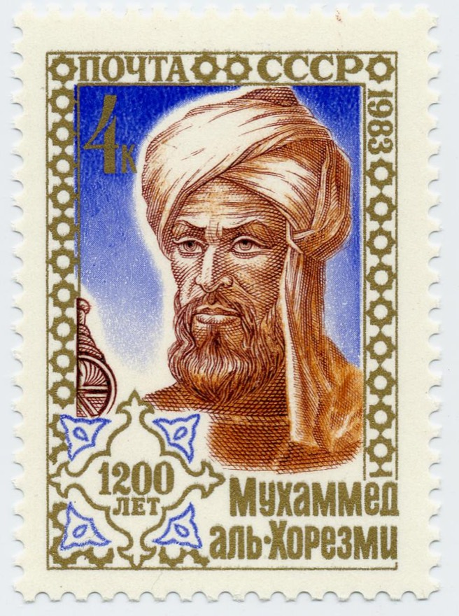
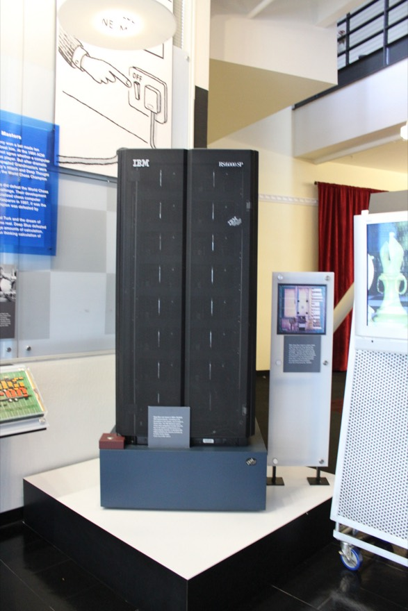
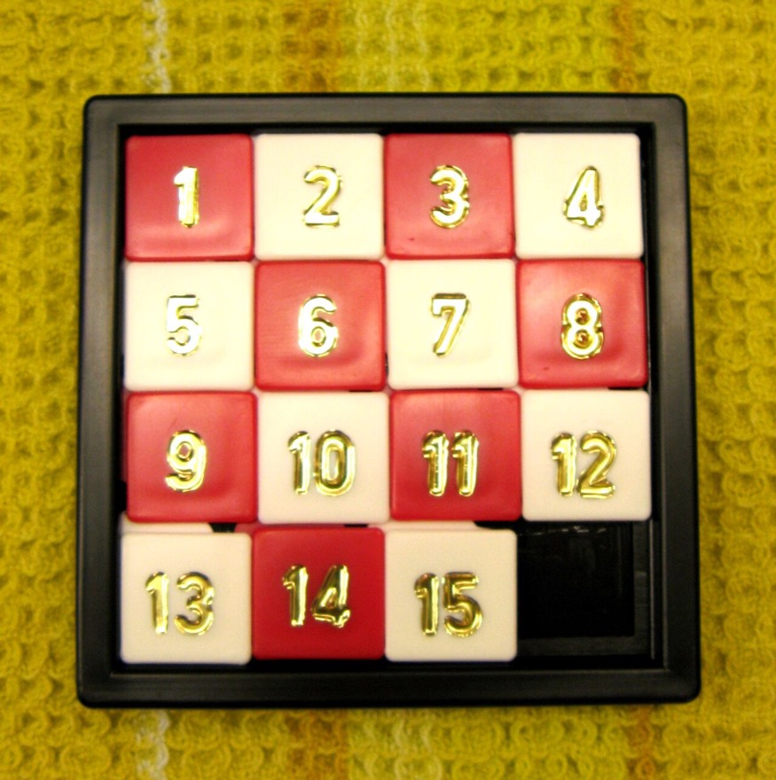
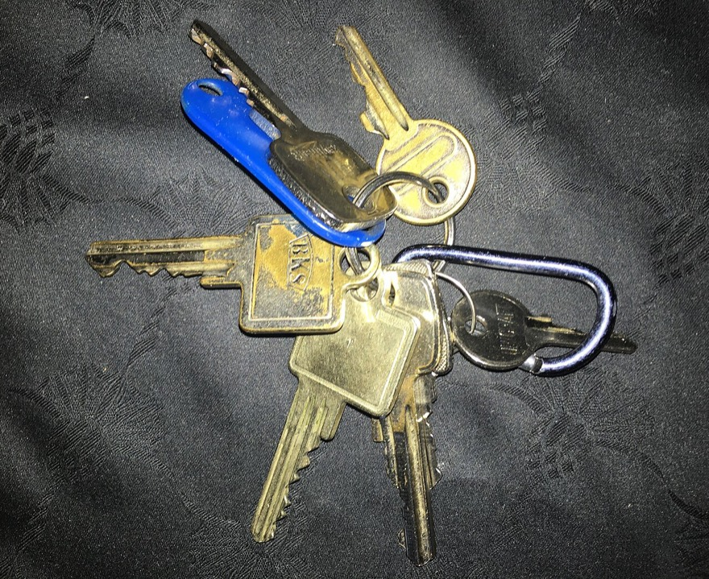
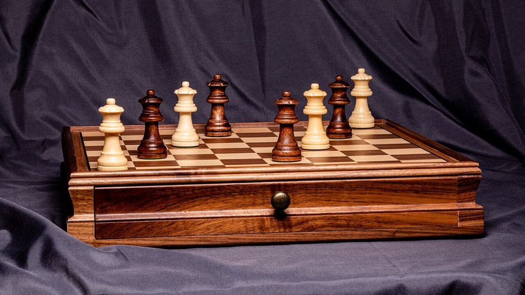
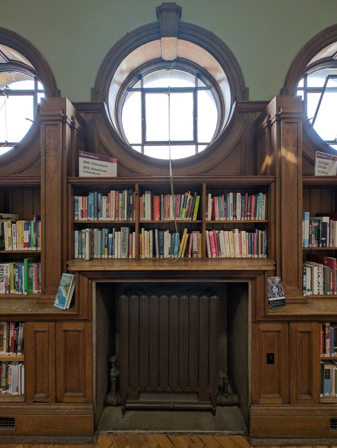
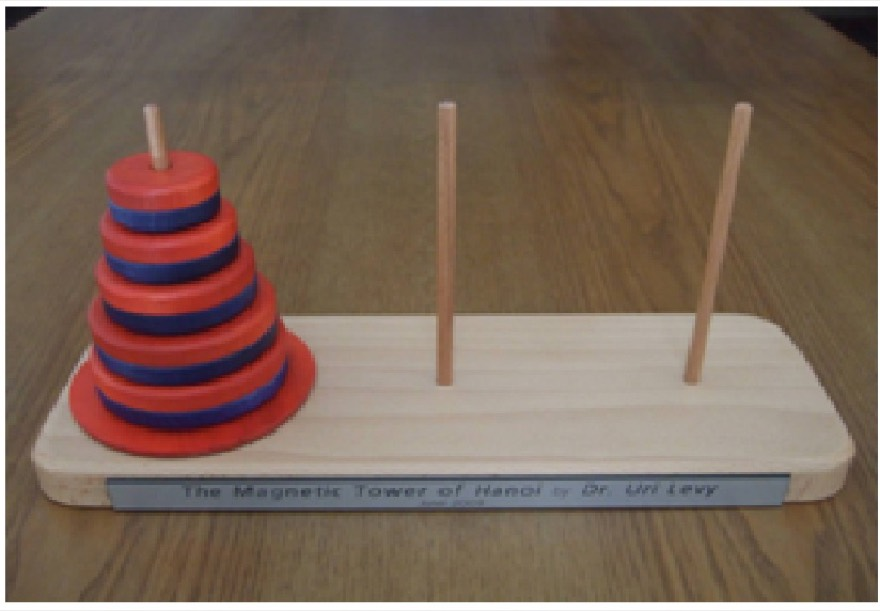
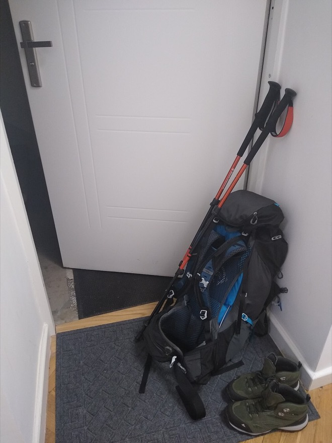

같은 문제를 푸는 방법은 여러 가지예요. 그중 어떤 방법이 더 빠르고 알뜰한지 따져 보고, 문제에 꼭 맞는 전략을 고르는 법을 배워요. 사진과 그림, 직접 돌려 보는 코드로 하나씩 천천히 살펴봐요.
1-1 알고리즘의 이해 10주차
알고리즘은 어렵고 낯선 말처럼 들리지만, 사실은 “일을 해내는 순서”예요. 라면 끓이는 순서도, 학교 가는 길도 모두 알고리즘이에요.
오늘의 질문
같은 문제를 푸는 방법이 여러 가지라면, 어떤 방법을 골라야 할까?
알고리즘이 무엇인지 내 말로 설명할 수 있어요.
좋은 알고리즘이 지켜야 할 네 가지 약속을 말할 수 있어요.
문제를 푸는 네 가지 작전(탐욕법·분기 한정법·분할 정복법·동적 계획법)을 구별할 수 있어요.
알고리즘은 “순서가 있는 방법”
쉽게 말하면
라면을 끓일 때 ① 물을 끓인다 → ② 면과 스프를 넣는다 → ③ 4분 기다린다 → ④ 불을 끈다 순서로 해요. 순서를 바꾸면(면을 먼저 넣고 물을 나중에?) 결과가 엉망이 되죠. 이렇게 문제를 해결하기 위해 정해 둔 순서와 방법을 알고리즘이라고 해요.

‘알고리즘’이라는 말은 사람 이름에서 왔어요. 9세기 페르시아의 수학자 무함마드 알콰리즈미의 이름을 라틴어로 옮긴 ‘알고리스무스(Algorismus)’가 알고리즘이 되었어요. 그는 인도에서 들어온 아라비아 숫자로 덧셈·뺄셈·곱셈·나눗셈을 하는 방법을 정리한 사람이에요.사진: А. Адашев · 퍼블릭 도메인 · Wikimedia Commons
컴퓨터는 사람과 달리 눈치껏 알아서 하지 못해요. 그래서 컴퓨터에게 시킬 알고리즘은 아래 네 가지 약속을 꼭 지켜야 해요.
약속 1 · 입출력
재료를 받고, 결과를 낸다
밖에서 자료를 받아서(입력) 결과를 1개 이상 내놓아야 해요(출력).
라면: 물·면·스프 → 라면 한 그릇
약속 2 · 유한성
언젠가는 끝난다
몇 단계를 거치든 반드시 끝나야 해요. 끝없이 도는 것은 알고리즘이 아니에요.
“계속 저으세요”만 있으면 영원히 못 먹어요
약속 3 · 명확성
헷갈리지 않는다
각 단계가 누가 읽어도 똑같이 이해되어야 해요.
“적당히 끓인다” ✗ → “4분 끓인다” ○
약속 4 · 수행 가능성
실제로 할 수 있다
각 단계는 실제로 해낼 수 있는 일이어야 해요.
“물을 1초 만에 끓인다” ✗
같은 문제, 서로 다른 네 가지 작전
생활 속 이야기 · 놀이공원
놀이공원에 갔어요. 정문에서 출발해 놀이기구를 모두 한 번씩만 타고 다시 정문으로 돌아와야 해요. 놀이기구의 위치와 거리는 놀이공원 앱으로 볼 수 있어요. 그런데 시간이 얼마 없어요!
어떤 순서로 돌아야 가장 많이 탈 수 있을까요?
놀이기구가 5개만 되어도 도는 순서는 120가지, 10개면 360만 가지가 넘어요. 그래서 “어떻게 고를지” 작전이 필요해요.사진: Ntsimp · CC0 · Wikimedia Commons
네 명의 친구가 서로 다른 생각을 내놓았어요. 이 네 가지 생각이 바로 이 단원에서 배울 네 가지 알고리즘 전략이에요.
가까운 곳부터 고르면 빠르게 정할 수 있어요. 하지만 마지막에 D로 가려면 먼 길을 되돌아와야 할 수도 있어요. 빠르게 정한 길이 항상 가장 좋은 길은 아니에요.
탐색 기반 · 탐욕법
지금 제일 좋아 보이는 것부터
“여기서 가장 가까운 놀이기구부터 타면 되지 않을까?”
매 순간 가장 좋아 보이는 것을 골라요. 빠르지만, 전체로 보면 가장 좋은 답이 아닐 수도 있어요.
탐색 기반 · 분기 한정법
안 될 길은 미리 지운다
“남은 시간보다 가는 데 더 오래 걸리는 놀이기구는 빼자.”
가망 없는 길은 끝까지 가 보지 않고 미리 잘라 내요.
관계 기반 · 분할 정복법
작게 나눠서 따로 푼다
“놀이공원을 구역으로 나눠서, 구역마다 길을 짠 뒤 이어 붙이자.”
큰 문제를 작은 문제로 쪼개 각각 풀고, 답을 합쳐요.
관계 기반 · 동적 계획법
한 번 푼 답은 적어 둔다
“아까 계산한 구간의 가장 빠른 길은 적어 두고 또 쓰자.”
같은 계산을 두 번 하지 않도록 답을 기억해 두고 다시 써요.
“놀이공원에서 제한 시간 안에 놀이기구를 최대한 많이 타려면?” 같은 문제도 네 전략 중 무엇을 고르느냐에 따라 결과가 달라집니다.
큰 갈래
어떻게 풀까
이 단원에서 배우는 곳
탐색 기반 알고리즘
가능한 답들을 하나의 ‘찾아볼 공간’으로 보고, 그 안을 돌아다니며 가장 좋은 답을 찾아요.
2-1, 2-2 (전체 탐색 · 이진 탐색 · 탐욕법 · 분기 한정법)
관계 기반 알고리즘
문제를 여러 조각으로 나누고, 조각들이 서로 어떻게 이어지는지(관계)를 이용해 풀어요.
3-1, 3-2 (분할 정복법 · 동적 계획법)
달리기 선수를 뽑는 네 명의 감독 — 탐욕법 감독은 “지금까지 본 사람 중 가장 빠르니 바로 뽑자”, 분기 한정법 감독은 “조건에 맞는 선수만 골라 면접 보자”, 분할 정복법 감독은 “조마다 1등을 뽑아 그 선수들끼리 다시 겨루자”, 동적 계획법 감독은 “앞 선수들의 기록을 적어 뒀다가 다음 선수와 비교하자”라고 말해요. 목표(빠른 선수 뽑기)는 같지만 방법이 다르면 걸리는 시간도, 결과도 달라져요.
아니에요. 끝나는 조건이 없어서 유한성을 지키지 못해요. “두 번 반복한다”처럼 끝이 정해져야 알고리즘이에요.
“현재 위치에서 가장 가까운 놀이기구부터 탄다”는 네 작전 중 무엇일까요?
탐욕법이에요. 매 순간 가장 좋아 보이는 선택을 해요. 다만 한 친구의 말처럼 “가장 가까운 곳을 고르는 것이 전체로 봤을 때 가장 빠른 길은 아닐 수도” 있어요.
역량 키우기 · 수행 활동
놀이공원 최적 경로 계획하기 — 정문에서 출발해 놀이기구를 모두 한 번씩만 타고 정문으로 돌아와야 해요. 제한된 시간 안에 최대한 많이 타려면 어떤 경로로 이동해야 할까요?
문제 정의 — 풀어야 할 문제를 한 문장으로 써 보자. (무엇을 알고 있고, 무엇을 구해야 하는가?)
알고리즘 선택 — 네 가지 전략을 각각 적용하면 어떤 계획이 나오는지 적어 보자.
탐욕법 — 현재 위치에서 가장 가까운 놀이기구부터 탄다
분기 한정법 — 남은 시간보다 이동 시간이 긴 놀이기구는 후보에서 뺀다
분할 정복법 — 놀이공원을 구역으로 나눠 구역별 경로를 짠 뒤 합친다
동적 계획법 — 이미 계산한 구간의 최적 경로를 저장해 두고 재사용한다
내가 고른 알고리즘과 그 이유를 친구들과 이야기해 보자.
단원을 다 배운 뒤 지금 쓴 생각과 비교해 보면, 내 판단이 어떻게 달라졌는지 알 수 있어요.
낱말 풀이
알고리즘
문제를 해결하는 순서와 방법을 빠짐없이 정리한 것
전략
문제를 풀 때 쓰는 큰 작전. 같은 문제도 전략에 따라 푸는 방식이 달라져요
최적(最適)
가능한 것 중에서 가장 좋은 것. ‘최적의 해’는 가장 좋은 답이라는 뜻
해(解)
문제의 답
핵심 포인트
알고리즘 = 문제를 해결하는 체계적인 절차나 방법.
알고리즘의 네 조건 — 입출력 · 유한성 · 명확성 · 수행 가능성.
탐색 기반(탐욕법, 분기 한정법)은 가능한 답 속을 찾아다니고, 관계 기반(분할 정복법, 동적 계획법)은 문제를 나눠 관계를 이용한다.
어떤 전략이 항상 최고인 것은 아니다. 문제의 성격에 맞는 전략을 고르는 것이 실력이다.
1-2 알고리즘 복잡도 10주차
두 가지 방법이 모두 정답을 낸다면, 어느 쪽이 더 좋은 방법일까요? “얼마나 빨리, 얼마나 적은 메모리로” 해내는지를 재는 자가 필요해요.
오늘의 질문
알고리즘의 빠르기를, 컴퓨터가 달라도 공평하게 비교하려면?
시간 복잡도와 공간 복잡도가 무엇인지 말할 수 있어요.
빅오(Big-O) 표기법으로 알고리즘의 빠르기를 나타낼 수 있어요.
코드를 보고 O(1), O(n), O(n²) 가운데 무엇인지 알아볼 수 있어요.
생활 속 이야기 · 생일인 친구 찾기
우리 반 30명 중에 오늘 생일인 친구를 찾아야 해요.
방법 ① 한 명씩 돌아가며 “오늘 생일이야?” 하고 물어봐요. 운이 나쁘면 30번을 물어야 해요. 전교생 900명이라면 900번!
방법 ② 생일이 날짜순으로 적힌 명단에서 오늘 날짜를 바로 펴 봐요. 30명이든 900명이든 한 번이면 끝나요.
사람이 늘어날수록 두 방법의 차이는 어떻게 될까요?
성능을 재는 두 개의 자 — 시간과 공간
시간 복잡도
일을 몇 번 해야 하나
알고리즘이 끝날 때까지 해야 하는 연산(계산·비교)의 횟수예요. 문제가 커질 때 얼마나 오래 걸리는지 알려 줘요.
“몇 번 물어봐야 하지?”
공간 복잡도
자리를 얼마나 차지하나
알고리즘이 일하는 동안 쓰는 메모리의 양이에요. 메모리를 너무 많이 쓰면 다른 프로그램과 자리를 다투다 느려지거나 멈출 수 있어요.
“명단을 적어 둘 공책이 몇 권 필요하지?”
보통은 시간을 아끼려면 메모리를 더 쓰고, 메모리를 아끼려면 시간이 더 걸려요(서로 반비례하는 경향). 그래서 알고리즘을 평가할 때는 주로 시간 복잡도를 기준으로 삼아요. 시간도 적게 걸리고 메모리도 적게 쓸수록 좋은 알고리즘이에요.
실행 시간을 직접 재 보면
1부터 n 사이에 소수가 몇 개인지 세는 두 프로그램이에요. 소수는 1과 자기 자신으로만 나누어떨어지는 수(2, 3, 5, 7, 11 …)예요. 두 프로그램의 차이는 어디까지 나눠 보느냐 하나뿐이에요.
프로그램 1
2부터 k−1까지 전부 나눠 본다
97이 소수인지 알려면 2, 3, 4, … 96까지 95번 나눠 봐요.
프로그램 2
2부터 √k 까지만 나눠 본다
97이 소수인지 알려면 2, 3, … 9까지 8번만 나눠 봐요. (√97 ≈ 9.8) 약수는 항상 짝을 이루기 때문에 작은 쪽만 확인하면 충분해요.
두 프로그램의 실행 시간 비교 — 직접 실행해 보기
import time
def chkPrime1(k): # 프로그램 1: 2 ~ k-1 까지 전부 확인
if k == 2:
return 1
for v in range(2, k):
if k % v == 0:
return 0
return 1
def chkPrime2(k): # 프로그램 2: 2 ~ √k 까지만 확인
for v in range(2, int(k**0.5) + 1):
if k % v == 0:
return 0
return 1
n = 5000 # 숫자를 바꿔 가며 실행해 보세요
for chk in (chkPrime1, chkPrime2):
s = time.time() # 시작 시각
total = 0
for num in range(2, n + 1):
total += chk(num)
e = time.time() # 끝난 시각
print(f'{chk.__name__} 소수 개수: {total} 처리 시간: {e - s:.4f} 초')
교과서에서 같은 실험을 세 번씩 한 결과예요. (컴퓨터마다 값은 달라져요.)
입력값 n
프로그램
1회
2회
3회
평균
1,000
1
0.0000초
0.0070초
0.0130초
0.0067초
2
0.0020초
0.0020초
0.0020초
0.0020초
50,000
1
8.8790초
7.9990초
7.9840초
8.2873초
2
0.0900초
0.0680초
0.0720초
0.0767초
n이 1,000일 때는 별 차이가 없지만 50,000이 되면 100배 넘게 벌어져요. 하지만 이렇게 직접 재는 방법에는 약점이 있어요. ① 쓰는 프로그래밍 언어에 따라 값이 달라지고 ② 같은 프로그램도 컴퓨터 성능에 따라 달라지며 ③ 입력이 아주 크면 너무 오래 걸려서 재는 것 자체가 어려워요.
빅오(Big-O) 표기법 — 빠르기를 한 단어로
그래서 시계로 재는 대신, “입력이 n개일 때 일을 대략 몇 번 하는가”를 식으로 나타내요. 이것을 점근적 표기법이라고 하고, 그중 가장 많이 쓰는 것이 빅오(Big-O) 표기법이에요.
쉽게 말하면
친구가 “우리 집에서 학교까지 1,203걸음이야”라고 하면 우리는 “아, 천 걸음쯤이구나” 하고 알아들어요. 빅오도 똑같아요. 자잘한 숫자는 버리고 가장 크게 영향을 주는 부분만 남겨요. 일을 3n² + 5n + 2번 한다면, n이 커질수록 n²이 압도적으로 커지니까 그냥 O(n²)이라고 불러요.
가장 빨리 커지는 항만 남긴다.3n² + 5n + 2 → 3n²
앞에 곱해진 숫자(계수)는 지운다.3n² → n²
O( ) 안에 넣는다. → O(n²) “오 엔 제곱”이라고 읽어요.
빅오는 최악의 경우, 그러니까 “아무리 운이 나빠도 이 정도를 넘지는 않는다”는 뜻이에요. 실제 걸리는 시간은 빅오로 나타낸 값보다 작거나 같아요.
표기법
나타내는 것
생일 찾기로 보면
빅오(O)
알고리즘의 최악의 경우 성능
맨 마지막 친구가 생일 → 30번
빅오메가(Ω)
알고리즘의 최선의 경우 성능
첫 번째 친구가 생일 → 1번
빅세타(Θ)
알고리즘의 평균적 성능 (최선과 최악을 모두 포함)
보통 15번쯤
점근적 표기법은 공간 복잡도에도 쓸 수 있지만, 교과서에서는 시간 복잡도만 다뤄요.
n이 작을 때는 차이가 없어 보여도, 데이터가 커지면 격차가 폭발합니다. 알고리즘 선택이 중요한 이유입니다.
자주 만나는 시간 복잡도를 빠른 것부터 느린 것 순서로 늘어놓으면 다음과 같아요. 숫자는 n개의 자료가 있을 때 최대 몇 번 일해야 하는지예요.
시간 복잡도
n = 10
n = 100
n = 1,000
생활 속 비유
코드에서는
O(1)
1
1
1
출석 번호로 사물함 바로 열기
공식으로 한 번에 계산
O(log n)
4
7
10
사전에서 낱말 찾기(반씩 펴 보기)
이진 탐색
O(n)
10
100
1,000
한 명씩 차례로 물어보기
순차 탐색, 반복문 1개
O(n log n)
40
700
10,000
카드를 반씩 나눠 가며 정리하기
퀵 정렬·합병 정렬(평균)
O(n²)
100
10,000
1,000,000
반 친구 모두가 서로 악수하기
이중 반복문, 선택 정렬
O(n³)
1,000
1,000,000
1,000,000,000
세 명씩 짝짓는 모든 경우
삼중 반복문
O(2ⁿ)
1,000
10³⁰
10³⁰⁰
전등 n개를 켜고 끄는 모든 경우
재귀 피보나치, 부분집합 전부
O(n!)
3,628,800
9.33×10¹⁵⁸
4.02×10²⁵⁶⁸
n명이 줄 서는 모든 순서
모든 순서를 다 만들어 보기
위로 갈수록 빠르고 아래로 갈수록 느려요. O(n)은 O(n²)보다, O(n²)은 O(n³)보다 시간 복잡도가 낮다고 말해요. n이 10일 때는 비슷해 보여도 1,000이 되면 하늘과 땅 차이예요.
직접 해 보기
입력 크기를 바꾸면 연산 수가 얼마나 늘어날까
20
막대 길이는 가장 큰 값을 기준으로 한 상대 비율입니다. n을 키울수록 O(n²)만 혼자 치솟는 것을 볼 수 있습니다.
코드를 보고 시간 복잡도 읽기
1부터 n까지의 합을 구하는 두 프로그램, 그리고 숫자를 크기순으로 늘어놓는 프로그램이에요. 반복문이 몇 겹인지를 보면 돼요.
프로그램 1 — O(n) : 반복문이 n번 돈다
total = 0
n = int(input('자연수 입력:'))
for num in range(n + 1): # n이 커지면 더하는 횟수도 그만큼 늘어남
total += num
print(f'1부터 {n}까지의 합은 {total}입니다.')
프로그램 2 — O(1) : 공식으로 한 번에 끝낸다
n = int(input('자연수 입력:'))
total = int(n * (n + 1) / 2) # n과 관계없이 실행 시간이 거의 같음
print(f'1부터 {n}까지의 합은 {total}입니다.')
n에 100을 넣든 100,000,000을 넣든 프로그램 2는 곱셈 한 번, 나눗셈 한 번이면 끝나요. 프로그램 1은 n번을 더해야 하고요.
프로그램 3 — O(n²) : 반복문이 이중으로 겹친다 (선택 정렬)
nums = [8, 2, 5, 11, 26, 33, 1, 88, 52, 7, 19, 75, 26, 44, 11, 62, 9, 15, 21, 30]
n = int(input('20 이하의 자연수 입력:'))
print('입력값\n', nums[:n])
for i in range(n): # 바깥쪽 반복문 n번
smallest, k = nums[i], i
for j in range(i, n): # 안쪽 반복문 최대 n번 → i번째로 작은 값 찾기
if smallest > nums[j]:
smallest = nums[j]
k = j
del nums[k] # 원래 위치에서 지우고
nums.insert(i, smallest) # i번째 자리에 끼워 넣기
print('크기순 값\n', nums[:n])
바깥 반복문이 n번, 그 안에서 안쪽 반복문이 최대 n번 돌기 때문에 가장 안쪽 문장은 최대 n × n = n²번 실행돼요.
최선과 최악 — 정수 10개가 든 리스트에서 앞에서부터 차례로 비교해 k를 찾는다고 해 봐요. k가 맨 앞에 있으면 1번(최선), 맨 뒤에 있으면 10번(최악) 비교해요. 빅오는 최악을 기준으로 하니까 이 알고리즘은 O(n)이에요. “대부분은 n번보다 적게 걸리지만, 최악에는 n번이 필요하다”는 뜻이에요.
역량 키우기 · 수행 활동
다음 프로그램들의 수행 과정을 살펴보고, 예상되는 시간 복잡도를 빅오 표기법으로 나타내 보자. 입력값을 작은 값에서 큰 값으로 바꾸거나 리스트 요소 개수를 늘려 가며 확인한다.
문제 1 — 재귀 함수를 사용한 1부터 n까지의 합 구하기
def sum_r(k):
if k == 1:
return 1
return sum_r(k - 1) + k
n = int(input('자연수 입력:'))
total = sum_r(n)
print(f'1부터 {n}까지의 합은 {total}입니다.')
문제 2 — 주어진 배열에서 최댓값을 찾는 두 가지 알고리즘 비교하기
def find_max_1(arr): # 방법 1
n = len(arr)
for i in range(n):
is_max = True
for j in range(n):
if arr[j] > arr[i]:
is_max = False
break
if is_max:
return arr[i]
def find_max_2(arr): # 방법 2
max_val = arr[0]
for num in arr:
if num > max_val:
max_val = num
return max_val
data = [8, 2, 5, 11, 26, 33, 1, 88, 52, 7]
print(find_max_1(data), find_max_2(data))
문제 1의 시간 복잡도는?
O(n). sum_r(n)은 sum_r(n-1), sum_r(n-2) … sum_r(1)을 한 번씩, 모두 n번 호출해요.
문제 2의 두 방법은 각각 얼마일까요?
방법 1은 원소 하나마다 나머지 전체와 비교하는 이중 반복문 → O(n²), 방법 2는 리스트를 한 번만 훑는 반복문 하나 → O(n)이에요. 같은 답을 내지만 방법 2가 훨씬 효율적이에요.
낱말 풀이
연산
더하기, 비교하기처럼 컴퓨터가 하는 일 하나하나
입력값 n
처리할 자료의 개수나 크기. 빅오에서는 늘 n이라고 불러요
점근적 표기법
식에서 덜 중요한 항과 계수를 지우고 간단히 나타내는 방법
최악의 경우
가장 운이 나쁠 때. 가장 오래 걸리는 상황
log n
n을 계속 반으로 나눠 1이 될 때까지의 횟수. 16 → 8 → 4 → 2 → 1 이니까 log 16 = 4
핵심 포인트
성능은 시간 복잡도(연산 횟수)와 공간 복잡도(메모리)로 평가하며, 주로 시간 복잡도를 본다.
빅오는 최악의 경우를 나타낸다. 상수와 낮은 차수 항은 버린다.
반복문 하나 → O(n), 중첩 반복문 → O(n²), 범위를 절반씩 줄임 → O(log n).
공식 한 줄로 끝나면 O(1). sum = n*(n+1)//2 가 반복문보다 압도적으로 빠른 이유.
2-1 탐색 기반 알고리즘의 이해 11주차
‘탐색’은 찾아다니는 것이에요. 가능한 경우를 지도처럼 펼쳐 놓고, 그 안에서 답이 있는 곳까지 길을 찾아가는 방법을 배워요.
오늘의 질문
컴퓨터는 퍼즐이나 체스 같은 문제의 답을 어떻게 찾아낼까?
문제를 초기 상태 · 목표 상태 · 행동으로 나누어 말할 수 있어요.
상태 공간이 무엇인지 그림으로 설명할 수 있어요.
모든 경우를 다 살펴보는 전체 탐색으로 문제를 풀 수 있어요.
생활 속 이야기 · 체스 챔피언을 이긴 컴퓨터
1997년, IBM이 만든 컴퓨터 ‘딥 블루’가 세계 체스 챔피언 가리 카스파로프를 이겼어요. 딥 블루는 사람처럼 ‘감’으로 두지 않았어요. 체스판에서 둘 수 있는 수백만 가지 수를 아주 빠르게 하나하나 살펴보고 그중 가장 유리한 수를 골랐어요.
이렇게 가능한 경우를 살펴보며 답을 찾는 것이 ‘탐색’이에요. 오늘날 길 찾기 앱, 로봇 청소기, 자율주행 자동차, 게임 속 인공지능도 모두 탐색을 써요.

체스 챔피언을 이긴 IBM의 ‘딥 블루’. 미국 컴퓨터 역사 박물관에 전시되어 있어요.사진: Anton Chiang from Cupertino, CA, USA · CC BY 2.0 · Wikimedia Commons
문제를 세 조각으로 나누기 — 초기 상태 · 목표 상태 · 행동
탐색으로 문제를 풀려면 먼저 문제를 또렷하게 정해야 해요. 문제란 어떤 목표를 이루기 위해 해결해야 하는 과제이고, 세 가지 요소로 이루어져요.
초기 상태
지금 어떤 모습인가
문제 해결을 시작하는 상태.
퍼즐이 뒤섞여 있는 처음 모습
목표 상태
어떤 모습이 되어야 하나
문제 해결의 목적이 되는 상태.
숫자가 순서대로 맞춰진 모습
행동(연산자)
무엇을 할 수 있나
초기 상태에서 목표 상태로 가기 위해 할 수 있는 일. 행동 하나가 지금 상태를 다른 상태로 바꿔요.
빈칸을 위·아래·왼쪽·오른쪽으로 한 칸 옮기기

숫자 타일을 밀어서 순서대로 맞추는 슬라이딩 퍼즐. 사진은 칸이 16개인 ‘15-퍼즐’이고, 교과서에서는 칸이 9개인 8-퍼즐로 설명해요.사진: Micha L. Rieser · Attribution · Wikimedia Commons
상태 공간 — 갈 수 있는 모든 경우의 지도
8-퍼즐은 1~8이 적힌 타일 8개와 빈칸 1개로 되어 있어요. 빈칸을 움직여(= 옆의 타일을 빈칸으로 밀어) 숫자를 순서대로 맞추면 돼요. 가운데가 비어 있다면 빈칸을 옮길 수 있는 방향은 위(UP)·왼쪽(LEFT)·아래(DOWN)·오른쪽(RIGHT) 네 가지예요.
점선 칸이 빈칸이에요. 초기 상태에서 빈칸을 네 방향으로 옮기면 서로 다른 네 상태가 생겨요. 이 예에서는 오른쪽 → 아래로 두 번 옮기면 목표 상태에 닿아요.
빈칸을 한 번 옮길 때마다 새로운 상태가 생기고, 그 상태에서 또 옮기면 또 새로운 상태가 생겨요. 이렇게 초기 상태에서 목표 상태까지 가는 동안 거칠 수 있는 모든 상태를 모아 놓은 것이 상태 공간이에요. 상태 공간은 위 그림처럼 가지를 치며 뻗어 나가는 그래프(트리)로 그릴 수 있어요.
쉽게 말하면
상태 공간은 갈림길이 그려진 미로 지도예요. 갈림길마다 갈 수 있는 길을 전부 그려 넣은 지도죠. 지도가 있으면 “어느 길로 가야 출구가 나오는지” 차근차근 찾을 수 있어요. 탐색 알고리즘은 이 지도 위를 돌아다니는 방법이에요.
스스로 해결하기 · 상태 공간으로 표현하기
집에서 학교까지 가는 길이 아래와 같아요. 같은 곳을 두 번 지나지 않는다면, 집에서 출발해 학교까지 갈 수 있는 모든 경우를 상태 공간(가지 그림)으로 그려 보자.
초기 상태는 ‘집에 있다’, 목표 상태는 ‘학교에 있다’, 행동은 ‘이어진 길로 한 칸 이동하기’예요.모두 몇 가지 길이 있을까요?
집에서 갈 수 있는 곳은 A와 C 두 곳이에요. 가지를 끝까지 뻗어 보면 4가지예요.
집 ─ A ─ 학교
집 ─ A ─ B ─ 학교
집 ─ C ─ B ─ 학교
집 ─ C ─ B ─ A ─ 학교
탐색 알고리즘을 고르는 두 가지 기준
탐색 기반 알고리즘은 상태 공간을 돌아다니며 목표 상태를 찾는 알고리즘이에요. 설계할 때는 두 가지를 먼저 살펴요.
찾아볼 곳이 어떤 모양인가? (탐색 공간의 구조) 한 줄로 늘어서 있으면 선형, 갈림길이 있으면 비선형이에요.
어디까지 찾아볼 것인가? (탐색 범위) 하나도 빠짐없이 다 보면 전체 탐색, 볼 필요 없는 곳을 빼고 보면 부분 탐색이에요.
기준
구분
어떤 경우
쉬운 비유
알고리즘
탐색 공간의 구조
선형 탐색
다음으로 갈 곳이 한 방향으로만 이어진 단순한 구조 (리스트·큐·스택)
한 줄로 늘어선 사물함
순차 탐색, 이진 탐색
비선형 탐색
길이 여러 갈래로 갈라지는 복잡한 구조 (트리·그래프)
갈림길이 많은 미로
깊이 우선 탐색, 너비 우선 탐색
탐색 범위
전체 탐색
가장 좋은 답을 찾으려고 모든 상태를 다 살펴야 할 때
방을 구석구석 다 뒤지기
브루트 포스 — 최적해 보장, 그러나 느림
부분 탐색
조건에 맞는 일부만 살펴도 충분할 때
“부엌에서 봤어”라는 단서로 부엌만 찾기
이진 탐색, 탐욕법, 분기 한정법 — 빠르지만 주의 필요
다른 이름 — 전체 탐색은 아무 단서 없이 가능한 경우를 모두 살피기 때문에 무정보 탐색 또는 맹목적 탐색이라고도 해요. 부분 탐색은 문제 해결에 도움이 되는 정보를 써서 범위를 줄이기 때문에 정보 이용 탐색이라고도 해요. 교과서에서는 ‘완전 탐색’과 같은 뜻으로 ‘전체 탐색’이라는 말을 써요.
스스로 해결하기 · 탐색 기반 알고리즘 선택하기
다음 예시에는 어떤 탐색이 어울릴까? (선형/비선형 · 전체/부분)
정렬된 배열 또는 순차적 리스트에서 특정 항목 찾기
회사의 조직도에서 특정 직원을 찾기 위해 상위 관리자부터 시작하여 부서별로 하위 직원들을 탐색하기
진로 탐색 사이트에서 특정 조건에 맞는 학과 찾기
이렇게 생각해 볼 수 있어요
① 한 줄로 늘어선 자료이니 선형, 정렬되어 있어 절반씩 버릴 수 있으니 부분 탐색(이진 탐색)이 가능해요. ② 조직도는 위에서 아래로 가지가 갈라지는 트리이니 비선형, 어느 부서에 있는지 모르면 차례로 모두 살펴야 하니 전체 탐색이에요. ③ ‘이과 계열’, ‘수도권’ 같은 조건으로 후보를 걸러 내므로 부분 탐색이에요. 자료를 어떻게 구조화하느냐에 따라 선형으로도 비선형으로도 볼 수 있어요. 정답보다 왜 그렇게 골랐는지 이유를 말하는 것이 중요해요.
전체 탐색 — 하나도 빠짐없이 다 해 보기

열쇠 꾸러미에서 우리 집 열쇠가 어느 것인지 모른다면? 첫 번째 열쇠부터 마지막 열쇠까지 하나씩 꽂아 보면 언젠가는 반드시 열려요.사진: Pittigrilli · CC BY-SA 4.0 · Wikimedia Commons
이렇게 가능한 경우를 하나도 빠짐없이 시도해 보는 방법이 전체 탐색이고, 브루트 포스 알고리즘(brute force)이라고도 해요. ‘brute’는 ‘단순히, 순전히’, ‘force’는 ‘힘’이라는 뜻이에요. 꾀를 부리지 않고 힘으로 밀어붙인다는 말이죠.
좋은 점
틀릴 수가 없다
모든 경우를 다 보기 때문에 가장 좋은 답(최적해)을 반드시 찾아요. 생각하기 쉽고 만들기도 쉬워요.
아쉬운 점
경우가 많으면 너무 느리다
살펴볼 경우가 많아지면 시간과 메모리를 엄청나게 써요. 그래서 작은 문제나 경우의 수가 적은 문제에 써요.
전체 탐색 알고리즘을 설계하는 다섯 단계
문제 정의 — 문제를 정확히 이해하고, 가능한 답의 범위를 정해요.
상태 공간 생성 — 가능한 모든 상태(답의 후보)를 늘어놓아요.
순회 방법 결정 — 상태 공간을 빠짐없이 도는 방법을 정해요. 보통 반복문이나 재귀 함수를 써요.
유효성 검사 — 각 상태가 문제의 조건을 만족하는지 확인해요.
최적의 해 선택 — 조건을 만족하는 것 중 가장 좋은 답을 골라요.
선형 전체 탐색 — 순차 탐색
한 줄로 늘어선 자료를 처음부터 끝까지 하나씩 확인하는 방법을 순차 탐색이라고 해요. 리스트 [9, 5, 8, 3, 7]에서 8을 찾아볼까요? 할 수 있는 행동은 ‘오른쪽 칸으로 넘어가기(right)’ 하나뿐이에요.
초기 상태는 첫 번째 칸, 목표 상태는 찾는 값이 든 칸이에요. 순차 탐색은 자료가 정렬되어 있지 않아도 쓸 수 있는 가장 간단한 탐색이에요.
def linear_search(arr, target):
for i in range(len(arr)): # 0번 칸부터 마지막 칸까지 차례로
if arr[i] == target: # 찾는 값과 같으면
return i # 그 위치(인덱스)를 돌려주고 끝
return -1 # 끝까지 없으면 -1
arr = [9, 5, 8, 3, 7]
target = 8
result = linear_search(arr, target)
print(f'Target found at index: {result}')
찾는 값이 맨 앞에 있으면 1번, 맨 뒤에 있거나 없으면 n번을 비교해요. 그래서 순차 탐색의 시간 복잡도는 O(n)이고, 자료가 많아질수록 그만큼 오래 걸려요.
함께 해결하기 · 한수의 개수 구하기
어떤 양의 정수의 각 자릿수가 일정한 간격(등차수열)을 이루면 그 수를 ‘한수’라고 해요.
123 → 1, 2, 3 (1씩 커짐) → 한수 ○
975 → 9, 7, 5 (2씩 작아짐) → 한수 ○
124 → 1과 2의 차이는 1, 2와 4의 차이는 2 → 한수 ✗
한 자리 수와 두 자리 수는 모두 한수예요. (비교할 간격이 하나뿐이거나 없으니까요)
정수 N이 주어졌을 때 1 이상 N 이하의 수 중 한수의 개수를 구해 보자. 전체 탐색으로 풀려면 1부터 N까지 차례로 살펴보면서 한수인 것만 세면 돼요.
def is_hansu(number):
if number < 100:
return True # 한/두 자리 수는 모두 한수
str_num = str(number) # 자릿수를 다루기 쉽게 글자로 바꿈
diff1 = int(str_num[0]) - int(str_num[1]) # 첫째-둘째 자리 차이
diff2 = int(str_num[1]) - int(str_num[2]) # 둘째-셋째 자리 차이
return diff1 == diff2 # 두 차이가 같으면 한수
def count_hansu(N):
count = 0
for i in range(1, N + 1): # 1부터 N까지 순차 탐색
if is_hansu(i):
count += 1
return count
N = int(input('N을 입력하세요: '))
print(count_hansu(N))
N에 999를 넣으면 몇 개일까요?
144개예요. 1~99는 모두 한수라서 99개, 100~999 가운데 한수는 111, 123, 135, 147, 159, 210, 222 … 처럼 45개가 있어요.
비선형 전체 탐색 — 갈림길을 모두 가 보기
트리나 그래프처럼 갈림길이 있는 구조를 빠짐없이 도는 것이 비선형 탐색이에요. 갈림길에서는 어느 쪽부터 갈지 순서를 정해야 하고, 순서에 따라 같은 구조에서도 방문 순서가 달라져요. 대표적인 방법이 Ⅱ단원에서 배운 깊이 우선 탐색(DFS)과 너비 우선 탐색(BFS)이에요.
깊이 우선 탐색 · DFS
한 길로 끝까지
갈림길에서 한쪽을 골라 막다른 곳까지 간 다음, 되돌아와 다른 길을 가요. 스택(또는 재귀)을 써요.
너비 우선 탐색 · BFS
가까운 곳부터 차례로
출발점에서 가까운 곳을 먼저 모두 본 다음 한 단계 더 먼 곳으로 넘어가요. 큐를 써요.
예제 — 3×3 숫자판에서 가장 작은 합 찾기. 아래 숫자판에서 가로줄(행)과 세로줄(열)이 겹치지 않게 숫자 3개를 골라요. 고른 숫자의 합이 가장 작게 하려면 무엇을 골라야 할까요?
위에서 아래로 한 줄씩 내려가며 고르는 모든 경우를 그린 트리예요. 맨 아래 숫자가 고른 세 수의 합이에요. 깊이 우선 탐색은 왼쪽 가지부터 끝까지 내려갔다가 되돌아오며 여섯 가지를 모두 살펴봐요.
첫째 줄에서는 3개 중 하나, 둘째 줄에서는 남은 세로줄 2개 중 하나, 셋째 줄에서는 남은 1개를 고르게 돼요. 그래서 경우의 수는 3 × 2 × 1 = 6가지예요. 6가지를 모두 따져 보면 3 + 2 + 3 = 8이 가장 작아요.
m = [[1, 5, 3], [2, 5, 7], [9, 3, 5]]
visited = [False] * 3 # 세로줄(열)을 이미 썼는지 표시
min_solution = float('inf') # 가장 작은 합. 처음엔 '무한대'로
def find_min_sum(row, current_sum):
global min_solution
if row == 3: # 마지막 줄까지 모두 골랐으면
min_solution = min(min_solution, current_sum)
return
for col in range(3): # 이번 줄에서 고를 세로줄을 하나씩 시도
if not visited[col]: # 아직 쓰지 않은 세로줄이면
visited[col] = True # 골랐다고 표시하고
find_min_sum(row + 1, current_sum + m[row][col]) # 다음 줄로
visited[col] = False # 되돌리기 — 다른 길도 가 봐야 하니까
find_min_sum(0, 0)
print('최소 합:', min_solution)
코드 읽는 법 — visited는 “이 세로줄은 이미 썼어요” 표시판이에요. 한 길을 끝까지 가 본 뒤에는 표시를 False로 되돌려 놓아야 다른 길을 갈 수 있어요. 숫자판이 n×n이면 경우의 수는 n × (n−1) × … × 1 = n!가지예요. 4×4면 24가지, 10×10이면 362만 가지가 넘어요.
함께 해결하기 · 자물쇠 비밀번호 찾기0~9 숫자 세 자리로 여는 자물쇠. 비밀번호를 잊어버렸다면?사진: Ivan Radic · CC BY 2.0 · Wikimedia Commons
0부터 9까지의 숫자로 세 자리 비밀번호를 정하는 자물쇠의 비밀번호를 전체 탐색으로 맞혀 보자.
전체 탐색으로 푸는 알고리즘을 말로 써 보자. (가능한 비밀번호는 모두 몇 가지일까?)
비밀번호가 [3, 4, 5]일 때, 위 알고리즘대로 찾아가는 과정을 프로그램으로 작성해 보자.
풀이 예시 보기
가능한 비밀번호는 000부터 999까지 10 × 10 × 10 = 1,000가지예요. 000, 001, 002 … 순서로 하나씩 돌려 보면 돼요. 반복문 세 개를 겹치면 모든 경우를 만들 수 있어요.
password = [3, 4, 5]
count = 0 # 몇 번째 시도인지 세기
for a in range(10): # 첫째 자리 0~9
for b in range(10): # 둘째 자리 0~9
for c in range(10): # 셋째 자리 0~9
count += 1
if [a, b, c] == password: # 유효성 검사: 비밀번호와 같은가?
print(f'{count}번째 시도에서 찾음: {a}{b}{c}')
345는 346번째 시도에서 열려요. 자리가 하나 늘 때마다 경우의 수는 10배가 돼요.
역량 키우기 · 4퀸 문제

체스의 퀸은 가로·세로·대각선으로 원하는 만큼 움직일 수 있는 가장 강한 말이에요. 사진은 8×8 판에 퀸 8개를 서로 공격하지 못하게 놓은 ‘8퀸 문제’의 답 가운데 하나예요.사진: Dietmar Rabich · CC BY-SA 4.0 · Wikimedia Commons
4×4 체스판에 퀸 4개를 서로 공격할 수 없게 놓아 보자. 처음 체스판은 비어 있고(초기 상태), 퀸은 상하좌우와 대각선 방향으로 원하는 만큼 움직일 수 있어요.
오른쪽처럼 놓으면 어떤 두 퀸도 같은 가로줄·세로줄·대각선에 있지 않아요. 프로그램에서는 이 답을 [1, 3, 0, 2](줄마다 퀸이 놓인 칸 번호)로 나타내요.
한 줄(행)에는 퀸을 하나만 놓을 수 있으니, 첫째 줄부터 한 줄씩 내려가며 퀸을 어느 칸(열)에 놓을지 정해요. 놓을 때마다 위쪽 줄의 퀸들과 같은 세로줄인지, 대각선인지 검사해요.
def is_safe(board, row, col):
for i in range(row): # 같은 열에 다른 퀸이 있는지 확인
if board[i] == col:
return False
for i in range(row): # 대각선 공격을 확인
if abs(board[i] - col) == abs(i - row): # 가로 차이 == 세로 차이면 대각선
return False
return True
def solve_n_queens(n, row=0, board=[]):
if row == n: # 마지막 줄까지 다 놓았으면 성공
print_board(board)
return True
for col in range(n): # 이번 줄의 각 칸에 놓아 보기
if is_safe(board, row, col):
board.append(col) # 놓고
if solve_n_queens(n, row + 1, board): # 다음 줄로
return True
board.pop() # 막히면 치우고 다음 칸 시도
return False
def print_board(board): # 퀸은 'Q', 빈칸은 '.'
for row in board:
line = ''
for i in range(len(board)):
if i == row:
line += 'Q'
else:
line += '.'
print(line)
print()
solve_n_queens(4)
board에는 줄마다 퀸을 놓은 칸 번호가 차례로 들어가요. [1, 3, 0, 2]라면 첫째 줄은 1번 칸, 둘째 줄은 3번 칸 … 이라는 뜻이에요.
낱말 풀이
탐색
원하는 것을 찾으려고 여기저기 살펴보는 일
상태
문제가 어느 한 순간에 놓여 있는 모습. 퍼즐이라면 ‘지금 타일이 놓인 모양’
상태 공간
초기 상태에서 목표 상태까지 가는 동안 거칠 수 있는 모든 상태의 모음
연산자
상태를 바꾸는 행동. 8-퍼즐에서는 UP·LEFT·DOWN·RIGHT
추론
주어진 정보에서 새로운 정보를 이끌어 내는 것. 인공지능은 탐색과 추론으로 문제를 풀어요
순회
빠뜨리지 않고 차례로 모두 돌아보는 것
유효성 검사
조건에 맞는지 확인하는 것
핵심 포인트
문제 = 초기 상태 + 목표 상태 + 행동. 거칠 수 있는 모든 상태의 집합이 상태 공간.
탐색 알고리즘은 구조(선형/비선형)와 범위(전체/부분)에 따라 설계가 달라진다.
전체 탐색(브루트 포스)은 최적해를 보장하지만, 경우의 수가 n!처럼 불어나면 감당할 수 없다.
순차 탐색은 O(n). 비선형 전체 탐색은 재귀 + “되돌리기”로 구현한다.
2-2 탐색 기반 알고리즘의 설계 — 탐색 공간 배제 12주차
“볼 필요 없는 곳은 아예 보지 않는다.” 탐색을 빠르게 만드는 가장 강력한 생각이에요. ‘배제’는 빼놓는다는 뜻이에요.
오늘의 질문
찾아볼 곳의 일부를 빼놓고도 정확한 답을 구할 수 있을까?
탐색 공간을 줄여야 하는 까닭을 설명할 수 있어요.
이진 탐색이 왜 빠른지 설명할 수 있어요.
탐욕 알고리즘과 분기 한정 알고리즘의 좋은 점과 조심할 점을 비교할 수 있어요.
생활 속 이야기 · 퍼즐과 호텔
1,000조각 퍼즐을 맞출 때 아무 조각이나 집어서 모든 자리에 대 보는 사람은 없어요. 가장자리 조각부터 맞추거나 무늬가 뚜렷한 조각을 먼저 찾아요. 쓸데없는 시도를 줄이는 거예요.
호텔에서 내 방을 찾을 때도 그래요. 복도의 표지판을 보면 한쪽 방향은 아예 안 가 봐도 돼요.
내 방이 320호라면 왼쪽 복도의 방 15개는 문 앞까지 가 보지 않아도 내 방이 아니라는 것을 알아요. 표지판 한 번 보는 것으로 절반이 지워졌어요.
왜 탐색 공간을 줄여야 할까
전체 탐색은 정확하지만, 살펴볼 것이 많아지면 평생 기다려도 끝나지 않아요.
얼마나 오래 걸릴까? — 체스판에 퀸 n개를 서로 공격하지 않게 놓으려면 n!가지 경우를 확인해야 해요. n = 30이면 30!가지인데, 1초에 1조(10¹²) 개씩 계산하는 컴퓨터로도 약 8조 4천억 년이 걸려요. 우주의 나이(약 138억 년)보다도 훨씬 길어요.
그래서 더 살펴보지 않아도 답을 찾는 데 지장이 없는 부분을 빼고 탐색해요. 이것을 탐색 공간 배제라고 해요. 다만 조심할 점이 있어요. 답이 있는 곳을 실수로 빼 버리면 답을 영영 찾지 못해요.
이진 탐색 — 매번 절반을 버린다

도서관의 책은 번호 순서대로 정렬되어 있어요. 그래서 813번 책을 찾을 때 100번대, 500번대 서가는 쳐다보지도 않고 지나갈 수 있어요. 정렬되어 있다는 것이 절반을 버릴 수 있는 비밀이에요.사진: Andy Li · CC0 · Wikimedia Commons
쉽게 말하면 · 숫자 맞히기 놀이
친구가 1부터 100 사이의 숫자 하나를 생각했어요. “50보다 커?” 하고 물으면 대답이 무엇이든 후보 절반이 한꺼번에 사라져요. 다시 남은 범위의 가운데를 물으면 또 절반이 사라지고요. 이렇게 하면 7번만 물어도 반드시 맞힐 수 있어요. 1부터 차례로 물으면 최악에는 100번을 물어야 하는데 말이죠.
이진 탐색(binary search)은 정렬된 자료에서 가운데 값과 비교해 절반을 버리는 일을 되풀이하는 알고리즘이에요. 1부터 100까지 순서대로 놓인 수에서 77을 찾아볼게요.
단, 이진 탐색을 쓰려면 데이터가 정렬되어 있어야 합니다.
1회 범위 1~100 가운데 50 50 < 77 → 1~50 은 버림
2회 범위 51~100 가운데 75 75 < 77 → 51~75 는 버림
3회 범위 76~100 가운데 88 88 > 77 → 88~100 은 버림
4회 범위 76~87 가운데 81 81 > 77 → 81~87 은 버림
5회 범위 76~80 가운데 78 78 > 77 → 78~80 은 버림
6회 범위 76~77 가운데 76 76 < 77 → 76 은 버림
7회 범위 77~77 가운데 77 찾았다!
100개 가운데서 7번 만에 찾았어요. 자료가 2배로 늘어도 비교는 딱 1번만 더 하면 돼요. 그래서 이진 탐색의 시간 복잡도는 O(log n)이고, 하나씩 다 보는 전체 탐색 O(n)보다 훨씬 효율적이에요.
자료의 개수 n
순차 탐색 (최악)
이진 탐색 (최악)
100개
100번
7번
1,000개
1,000번
10번
100만 개
1,000,000번
20번
10억 개
1,000,000,000번
30번
직접 해 보기
이진 탐색 — 한 번에 절반씩 지워 보기
0이진 탐색 비교 횟수
0순차 탐색이라면
찾을 값을 정하고 다음 단계를 눌러 보세요. 중간값과 비교해 절반을 통째로 버립니다.
16칸짜리 배열이라 최대 4번이면 찾습니다(2⁴=16). 순차 탐색이라면 최악의 경우 16번을 비교해야 합니다.
이진 탐색 구현
def binary_search(arr, target):
lo, hi = 0, len(arr) - 1 # 찾아볼 범위의 왼쪽 끝, 오른쪽 끝
count = 0
while lo <= hi: # 범위가 남아 있는 동안
mid = (lo + hi) // 2 # 가운데 위치
count += 1
if arr[mid] == target:
print(f'{count}번 비교해서 찾음')
return mid # 찾음
elif arr[mid] < target:
lo = mid + 1 # 왼쪽 절반을 통째로 배제
else:
hi = mid - 1 # 오른쪽 절반을 통째로 배제
return -1 # 못 찾음
numbers = list(range(1, 101)) # 1 ~ 100 (정렬되어 있음)
print('위치(인덱스):', binary_search(numbers, 77))
꼭 기억할 조건 — 이진 탐색은 자료가 크기순으로 정렬되어 있을 때만 쓸 수 있어요. 뒤죽박죽 섞여 있으면 “가운데보다 크니까 오른쪽에 있다”고 말할 수 없기 때문이에요.
스스로 해결하기 · 최단 경로 구하기
서울에서 대구를 거쳐 부산까지 가는 길이 아래와 같을 때, 가장 짧은 길을 구해 보자.
전체 탐색으로 최단 경로를 구할 때, 살펴봐야 하는 경로는 모두 몇 가지일까?
탐색 공간을 배제해 더 효율적으로 구하는 방법을 생각해 보고, 그 방법으로는 몇 가지를 살펴보면 되는지 구해 보자.
풀이 보기
① 서울→대구 3가지 × 대구→부산 3가지 = 9가지를 모두 더해 비교해야 해요. ② 어느 길로 대구에 왔든 대구→부산 구간은 똑같으니, 구간마다 가장 짧은 길만 고르면 돼요. 서울→대구에서 3개를 비교해 235km, 대구→부산에서 3개를 비교해 90km. 3 + 3 = 6가지만 보면 되고, 답은 235 + 90 = 325km예요. 긴 길 4개는 더 따져 보지 않고 뺀 거예요.
탐욕 알고리즘 — 지금 가장 좋아 보이는 것을 고른다
탐욕 알고리즘(greedy algorithm)은 문제를 풀 때 단계마다 그 순간 가장 좋아 보이는 것을 고르고, 한번 고른 것은 다시 돌아보지 않는 방법이에요. ‘탐욕’은 욕심이라는 뜻이에요. 눈앞의 가장 큰 것을 덥석 집는 거죠.
쉽게 말하면
뷔페에서 보이는 음식 중 제일 맛있어 보이는 것부터 접시에 담는 것과 같아요. 고민할 필요가 없으니 빨라요. 하지만 첫 접시를 가득 채웠더니 저쪽 끝에 더 맛있는 음식이 있었다면? 이미 배가 불러 못 먹어요. 탐욕법은 빠르지만, 나중에 후회할 수도 있는 방법이에요.
예제 ① 트리에서 가장 큰 합 찾기. 맨 위(루트)에서 맨 아래까지 내려가며 만나는 수의 합이 가장 크게 되는 길을 찾아요. 탐욕법은 갈림길마다 더 큰 수 쪽으로 내려가요.
첫 단계에서 3을 버렸기 때문에 그 아래 숨어 있던 100을 영영 보지 못합니다. 배제한 곳에 답이 없다는 확신이 있을 때만 탐욕법을 써야 합니다.
방법
하는 일
시간 복잡도 (높이 n인 완전 이진 트리)
전체 탐색
루트에서 맨 아래까지 가는 모든 길의 합을 구해 비교
O(n × 2ⁿ)
탐욕 알고리즘
층마다 왼쪽·오른쪽 자식 중 큰 쪽 하나만 비교해 내려감
O(n)
예제 ② 동전을 가장 적게 써서 거슬러 주기. 50원, 10원, 5원, 1원짜리 동전으로 손님에게 63원을 거슬러 줘야 해요. 동전 개수를 가장 적게 하려면? 탐욕법의 작전은 간단해요. 큰 동전부터 줄 수 있는 만큼 준다.
남은 돈 63원 50원을 줄 수 있나? 예 → [50] 남은 돈 13원
남은 돈 13원 50원은 못 줌. 10원? 예 → [50, 10] 남은 돈 3원
남은 돈 3원 10원, 5원은 못 줌. 1원 → [50, 10, 1] 남은 돈 2원
남은 돈 2원 1원 → [50, 10, 1, 1] 남은 돈 1원
남은 돈 1원 1원 → [50, 10, 1, 1, 1] 남은 돈 0원 끝!
def greedy_coin_change(amount, coins):
result = []
for coin in coins: # 큰 동전부터 차례로
while amount >= coin: # 이 동전을 줄 수 있는 동안
amount -= coin # 그만큼 빼고
result.append(coin) # 준 동전 목록에 추가
return result
coins = [50, 10, 5, 1] # 큰 것부터(내림차순) 적어 둔 동전 종류
amount = 63 # 거슬러 줄 금액
change = greedy_coin_change(amount, coins)
print('거슬러 줄 동전:', change)
동전 5개. 이 경우는 탐욕법이 가장 좋은 답을 냈어요. 그런데 동전 종류가 바뀌면 이야기가 달라져요.
탐욕 알고리즘
9원 + 1원 + 1원 + 1원 = 4개
“가장 큰 9원짜리부터 줘야지.”
동전이 9원, 6원, 1원뿐일 때 12원을 거슬러 주면: 9원을 먼저 주고 남은 3원을 1원 3개로.
최적의 해
6원 + 6원 = 2개
“6원짜리 두 개면 되겠어.”
가장 큰 동전을 쓰지 않는 쪽이 더 좋은 답이었어요. 탐욕법은 이 답을 찾지 못해요.
탐욕법을 써도 되는 때 — 탐욕법은 단순하고 빠르지만 항상 최적의 해를 보장하지는 않아요. 우리나라 동전(500·100·50·10원)처럼 큰 동전이 작은 동전의 배수일 때는 탐욕법이 잘 맞아요. “빼놓은 쪽에는 더 좋은 답이 없다”는 것을 논리적으로 설명할 수 있을 때만 써야 해요.
함께 해결하기 · 시간표 작성하기
과목별 시작 시간과 종료 시간이 다음과 같을 때 최대한 많은 수업을 들을 수 있는 시간표를 만들어 보자. (시간이 겹치는 수업은 함께 들을 수 없어요.)
막대가 위아래로 겹치는 과목끼리는 같이 들을 수 없어요.
탐욕 작전 — 가장 빨리 끝나는 과목을 먼저 고르고, 그 과목이 끝난 뒤에 시작하는 것 중 또 가장 빨리 끝나는 과목을 고르기를 되풀이해요. 빨리 끝나는 수업을 골라야 뒤에 들을 수 있는 시간이 많이 남기 때문이에요.
제일 빨리 끝나는 과목은?
첫 번째로 고른 과목이 끝난 뒤에 시작하면서 제일 빨리 끝나는 과목은?
두 번째로 고른 과목이 끝난 뒤에 시작하면서 제일 빨리 끝나는 과목은?
아래 프로그램의 for 문 안을 채워 완성해 보자.
classes = [('미술', 9, 10), ('영어', 9.5, 10.5), ('수학', 10, 11),
('컴퓨터', 10.5, 11.5), ('음악', 11, 12)]
classes.sort(key=lambda x: x[2]) # 종료 시간 기준으로 정렬
selected_classes = [] # 선택된 수업 리스트
last_end_time = 0 # 마지막으로 고른 수업이 끝나는 시간
for cls in classes:
# 현재 수업의 시작 시간이 마지막으로 선택된 수업의 종료 시간보다 같거나 늦다면 선택
pass
print('최대한 많은 수업을 들을 수 있는 시간표: ', selected_classes)
풀이 보기
미술(9~10) → 수학(10~11) → 음악(11~12), 3과목이에요. pass 자리에 아래 세 줄을 넣으면 돼요.
if cls[1] >= last_end_time: # cls = (과목, 시작, 종료)
selected_classes.append(cls[0])
last_end_time = cls[2]
분기 한정 알고리즘 — 가망 없는 가지는 잘라 낸다
분기 한정 알고리즘(branch and bound)은 갈림길마다 “이 길로 가면 지금까지 찾은 답보다 좋아질 수 있을까?”를 따져 보고, 가망이 없으면 그 아래는 통째로 건너뛰는 방법이에요.
쉽게 말하면 · 가지치기
과일나무를 키울 때 모든 가지를 다 키우지 않아요. 열매가 잘 열릴 가지만 남기고 쓸모없는 가지는 미리 잘라 내요. 그래야 나무가 힘을 아껴 좋은 열매를 맺어요. 탐색도 똑같아요. 답이 없을 가지를 미리 잘라 내면 훨씬 빨리 답에 닿아요. 그래서 분기 한정법을 가지치기 기법이라고도 해요.
분기(branching) — 지금 상태에서 고를 수 있는 선택지를 모두 만들어요. (가지를 뻗는다)
한정(bounding) — 지금 길이 가장 좋은 답으로 이어질 가망이 없으면 더 가지 않고 빼 버려요. (가지를 자른다)
백트래킹(backtracking) — 가던 길이 막히면 바로 앞 갈림길로 되돌아가 다른 길을 가 봐요.
노드에 닿을 때마다 “여기서 더 가면 얻을 수 있는 가장 좋은 값(한계치)”을 계산해요. 그 값이 지금까지 찾은 답보다 좋지 않으면 그 아래 가지는 보지 않아요.
예제 — 둘레가 9m인 삼각형 화단은 몇 가지나 만들 수 있을까. 세 변의 길이는 모두 자연수이고, 세 변의 합이 꼭 9가 되어야 해요.
둘레가 9m일 때 만들 수 있는 삼각형 화단은 이 세 가지뿐이에요.
전체 탐색으로는 세 변이 될 수 있는 (1, 1, 7), (1, 2, 6), (1, 6, 2), (2, 1, 6) … 을 모두 따져 봐야 해요. 그런데 (1, 2, 6), (1, 6, 2), (2, 1, 6), (2, 6, 1), (6, 1, 2), (6, 2, 1)은 순서만 다를 뿐 사실은 같은 삼각형이에요. 같은 것을 여섯 번 검사하는 셈이죠. 분기 한정법은 두 가지 꾀로 가지를 잘라 내요.
가지치기 ①
한 변은 둘레의 절반을 넘을 수 없다
삼각형이 되려면 가장 긴 변이 나머지 두 변의 합보다 짧아야 해요. 한 변이 5m면 남은 두 변의 합은 4m라서 삼각형이 안 돼요. 그러니 5 이상은 볼 필요가 없어요.
가지치기 ②
작은 변부터 순서대로만 센다
세 변을 a ≤ b ≤ c 순서로만 만들면 (1, 2, 6)과 (6, 2, 1)을 따로 세지 않아요. 중복 검사가 사라져요.
# 삼각형 조건: 두 변의 길이 합이 나머지 한 변보다 길어야 한다.
perimeter = 9 # 화단 둘레
count = 0
a = 1 # a, b, c는 삼각형의 세 변 (a ≤ b ≤ c)
while a < (perimeter // 2): # ❶ 한 변은 둘레의 절반 미만
b = a
while b <= (perimeter - a) // 2: # ❷ b는 c보다 작거나 같게
c = perimeter - a - b # 둘레가 정해져 있으니 c는 저절로 정해짐
if c < b: # 삼각형 성립 불가능한 경우 가지치기
break
if a + b > c and a + c > b and b + c > a: # ❸ 삼각형 조건 검사
count += 1
b += 1
a += 1
print(f'만들 수 있는 화단의 수: {count}')
스스로 해결하기
위 프로그램을 고쳐서, 화단의 수와 함께 삼각형이 되는 세 변의 길이도 출력해 보자. 둘레를 12, 20으로 바꾸면 어떻게 되는지도 확인해 보자.
perimeter = 9
count = 0
a = 1
while a < (perimeter // 2):
b = a
while b <= (perimeter - a) // 2:
c = perimeter - a - b
if c < b:
break
if a + b > c and a + c > b and b + c > a:
count += 1
# 여기에 한 줄을 추가해 세 변의 길이를 출력해 보자
b += 1
a += 1
print(f'만들 수 있는 화단의 수: {count}')
탐욕 알고리즘과 분기 한정 알고리즘 견주어 보기
구분
분기 한정 알고리즘
탐욕 알고리즘
접근 방식
분기점마다 유망하지 않은 경로를 배제
현재 단계에서 가장 좋은 선택을 함
최적해
보장함
보장하지 않음
계산 복잡도
일반적으로 높음(분기마다 한계치 계산)
일반적으로 낮음
비유
지도를 보며 막다른 길을 미리 지우는 사람
눈앞에서 가장 넓어 보이는 길로 달리는 사람
분기 한정법은 최적해를 보장하지만 분기점마다 한계치를 계산해야 해서 모든 문제에서 가장 효율적이지는 않아요. 문제의 특성과 제약 조건을 잘 살펴 알맞은 방법을 고르는 것이 중요해요.
내려가는 도중에 지금까지의 합이 이미 찾아 둔 최소 합보다 크거나 같으면 더 내려가도 소용없어요. 그 자리에서 돌아가면 돼요.
matrix = [
[1, 5, 3],
[2, 5, 7],
[9, 3, 5]
]
visited = [False] * 3
min_solution = float('inf')
visit_count = 0 # 몇 번 들여다봤는지 세기
def find_min_sum(row, current_sum):
global min_solution, visit_count
visit_count += 1
if current_sum >= min_solution: # 한정: 가망 없으면 가지치기
return
if row == 3:
min_solution = current_sum
return
for col in range(3):
if not visited[col]:
visited[col] = True
find_min_sum(row + 1, current_sum + matrix[row][col])
visited[col] = False # 백트래킹
find_min_sum(0, 0)
print('최소 합:', min_solution, '/ 살펴본 횟수:', visit_count)
역량 키우기 · 4퀸 문제를 더 효율적으로
2-1에서 풀었던 4퀸 문제를 탐색 공간 배제의 눈으로 다시 살펴보자.
탐욕 알고리즘과 분기 한정 알고리즘 가운데 이 문제에 어울리는 것을 고르고, 이유를 적어 보자.
‘줄마다 퀸을 하나씩, 아무 칸에나’ 놓는 전체 탐색은 4 × 4 × 4 × 4 = 256가지를 만든 뒤 검사해요. 퀸을 놓을 때마다 바로 검사해서 안 되는 가지를 자르면 얼마나 줄어들지 시간 복잡도 측면에서 비교해 보자.
생각 나누기
탐욕법은 “지금 놓을 수 있는 첫 칸에 놓고 돌아보지 않는” 방법인데, 그러면 셋째 줄쯤에서 놓을 곳이 없어 실패해요. 4퀸 문제는 막히면 되돌아가야 하므로 분기 한정(백트래킹)이 어울려요. 사실 2-1의 프로그램에서 is_safe()로 검사하고 board.pop()으로 되돌아가는 부분이 바로 가지치기와 백트래킹이에요. 둘째 줄에서 공격받는 칸에 퀸을 놓으려는 순간 그 아래 16가지(4×4)를 한꺼번에 지워 주기 때문에, 256가지를 다 만들어 보는 것보다 훨씬 적게 살펴봐요.
중단원 수행 활동 · 1이 될 때까지
N과 K가 주어졌을 때, N이 1이 될 때까지 다음 두 가지 중 하나를 골라 되풀이해요. 가장 적은 횟수로 1을 만들려면 몇 번이 필요할까?
N에서 1을 뺀다.
N을 K로 나눈다. (단, N이 K로 나누어떨어질 때만 고를 수 있다.)
예) N = 17, K = 4 → 17 − 1 = 16 → 16 ÷ 4 = 4 → 4 ÷ 4 = 1 … 3번
어떤 알고리즘이 어울릴까요?
탐욕 알고리즘이에요. 1을 빼는 것보다 K로 나누는 것이 수를 훨씬 빨리 줄이니까, 나눌 수 있으면 무조건 나누고, 안 되면 1을 빼요. (K가 2 이상이면 이 선택이 언제나 가장 좋아요.)
n, k = 17, 4
count = 0
while n > 1:
if n % k == 0: # 나누어떨어지면 나누기 (가장 좋아 보이는 선택)
n //= k
else: # 아니면 1 빼기
n -= 1
count += 1
print('최소 횟수:', count)
배운 내용 정리 · 탐색 기반 알고리즘(○/×) 탐욕 알고리즘, 분기 한정 알고리즘처럼 탐색 공간을 배제하는 기법을 쓰면 탐색 공간이 줄어 더 효율적으로 탐색할 수 있다.
○. 다만 탐색 공간을 배제한다고 해서 반드시 최적의 해가 보장되는 것은 아니에요(탐욕법).
문제 해결의 각 단계에서 그 순간 가장 최선의 선택을 하는 기법은 (탐욕 알고리즘 / 분기 한정 알고리즘)이다.
탐욕 알고리즘. 분기 한정 알고리즘은 분기점마다 유망하지 않은 경로를 배제하는 방법이에요.
선형 구조의 탐색 공간과 비선형 구조의 탐색 공간에 어울리는 탐색을 이어 보자. (이진 탐색 / 깊이 우선 탐색)
선형 구조 — 이진 탐색, 비선형 구조 — 깊이 우선 탐색.
(서술형) N개의 자료에 대한 선형(순차) 탐색과 이진 탐색의 효율을 시간 복잡도로 비교해 보자.
순차 탐색은 처음부터 하나씩 비교하므로 최악의 경우 N번, O(n)이에요. 이진 탐색은 한 번 비교할 때마다 범위가 절반으로 줄어 O(log n)이에요. 자료가 많을수록 이진 탐색이 훨씬 유리하지만, 자료가 정렬되어 있어야 쓸 수 있어요.
낱말 풀이
배제
받아들이지 않고 빼놓는 것. ‘탐색 공간 배제’는 볼 필요 없는 곳을 빼는 것
유망하다
앞으로 잘될 가망이 있다. 유망하지 않은 길 = 가 봐야 좋은 답이 없을 길
한계치
그 길로 끝까지 갔을 때 얻을 수 있는 가장 좋은 값을 미리 어림한 것
백트래킹
답을 찾다가 막히면 되돌아가서 다른 길을 찾는 기법
완전 이진 트리
모든 층이 꽉 차 있고, 마지막 층은 왼쪽부터 차례로 채워진 이진 트리
내림차순
큰 것부터 작은 것 순서. 반대는 오름차순
핵심 포인트
이진 탐색 O(log n) — 정렬된 데이터에서만. 매번 절반을 배제한다.
탐욕법은 빠르지만(예: O(n)) 최적해를 보장하지 않는다. 문제 조건을 반드시 확인.
분기 한정법은 분기 → 한정 → 백트래킹. 가망 없는 가지를 잘라 내고 되돌아간다. 최적해를 보장한다.
잘못 배제하면 답을 아예 못 찾는다 — 이것이 부분 탐색의 위험.
3-1 관계 기반 알고리즘의 이해 — 분할 정복 13주차
큰 문제를 한입에 삼키려 하지 말고, 작게 쪼개서 하나씩 풀어요. 그리고 큰 문제와 작은 문제가 어떻게 이어져 있는지(관계)를 찾아내요.
오늘의 질문
전체 문제와 부분 문제 사이의 관계를 알면 문제를 더 쉽게 풀 수 있을까?
문제를 작은 문제로 나누고, 둘 사이의 관계를 식으로 쓸 수 있어요.
분할 정복법의 세 단계(분할·정복·병합)를 설명할 수 있어요.
퀵 정렬과 합병 정렬이 어떻게 움직이는지 따라갈 수 있어요.
생활 속 이야기 · 학교 축제
학교 축제를 혼자 준비하려면 막막해요. 하지만 동아리마다 부스 하나씩 맡으면 어떨까요? 요리 동아리는 먹거리 부스, 방송 동아리는 무대, 미술 동아리는 꾸미기. 각자 맡은 일을 끝내고 합치면 축제 전체가 완성돼요.
이렇게 복잡한 문제를 작은 단위로 나누고, 작은 문제의 답을 엮어 전체를 해결하는 방법을 관계 기반 알고리즘이라고 해요.
문제를 쪼개면 좋은 점
①
구조가 보인다
전체 문제를 작은 부분 문제로 나누면 문제가 어떻게 생겼는지 파악하기 쉬워져요.
②
코드를 다시 쓸 수 있다
부분 문제를 푸는 코드를 한 번 만들어 두면 여러 번 재사용할 수 있어요.
③
관계가 드러난다
부분 문제의 답을 이용해 전체 문제의 답을 구하는 규칙(관계식)을 발견할 수 있어요.
예제 — 1부터 n까지의 합. 1부터 n까지의 합을 f(n)이라고 하면, 부분 문제는 f(1), f(2), f(3) … 이에요.
계단 100칸을 오른 높이를 알고 싶다면, 99칸까지의 높이에 한 칸만 더하면 돼요. 99칸의 높이는 98칸에 한 칸을 더한 것이고요. 이렇게 “큰 문제의 답 = 조금 작은 문제의 답 + 약간”이라는 규칙을 찾으면, 가장 작은 문제(1칸) 하나만 알아도 전체가 풀려요. 이 규칙을 관계식이라고 하고, 수학에서는 수학적 귀납법이라는 방법으로 이런 관계를 나타내요.
관계식은 Ⅰ단원에서 배운 재귀 함수로 그대로 옮길 수 있어요.
def f(n):
if n == 1: # 가장 작은 문제: f(1) = 1
return 1
else:
return f(n - 1) + n # 관계식: f(n) = f(n-1) + n
print(f(10))
문제
가장 작은 문제
관계식
1부터 n까지의 합
f(1) = 1
f(n) = f(n−1) + n
팩토리얼 n!
f(1) = 1
f(n) = f(n−1) × n
하노이 탑 이동 횟수
T(1) = 1
T(n) = 2 × T(n−1) + 1
계단 오르기(1칸 또는 2칸)
f(1) = 1, f(2) = 2
f(n) = f(n−1) + f(n−2)
하노이의 탑 — 문제를 분해해서 관계 찾기

하노이의 탑. 기둥 세 개와 크기가 다른 원반으로 되어 있어요. 왼쪽 기둥의 원반을 모두 다른 기둥으로 옮기는 놀이예요.사진: Uri Levy · CC BY-SA 3.0 · Wikimedia Commons
규칙은 두 가지예요. ① 한 번에 원반 하나만 옮길 수 있다. ② 큰 원반을 작은 원반 위에 올릴 수 없다. 원반이 많아지면 어디서부터 손대야 할지 막막해요. 원반 1개짜리, 2개짜리, 3개짜리 문제로 나누어 생각해 봐요.
원반 1개
1번
출발 기둥에서 목표 기둥으로 바로 옮기면 끝. 더 쪼갤 수 없는 가장 작은 문제예요.
원반 2개
3번
① 작은 원반을 보조 기둥으로 ② 큰 원반을 목표 기둥으로 ③ 작은 원반을 목표 기둥으로.
원반 3개
7번 = 3 + 1 + 3
위의 2개를 보조 기둥으로(3번) → 가장 큰 원반을 목표로(1번) → 2개를 다시 목표로(3번).
색칠한 것이 가장 큰 원반이에요. 가장 큰 원반을 옮기려면 그 위의 2개를 먼저 비켜 놓아야 하고, 큰 원반을 옮긴 뒤에는 2개를 다시 그 위로 옮겨야 해요.
원반 3개 문제 안에 원반 2개 문제가 두 번 들어 있어요! 원반 n개를 옮기는 횟수를 T(n)이라고 하면:
T(1) = 1
T(n) = 2 × T(n - 1) + 1
│ └ 가장 큰 원반 1개를 목표 기둥으로 옮기는 1번
└ 위의 n-1개를 보조 기둥으로 옮길 때 한 번, 다시 목표 기둥으로 옮길 때 한 번
관계식으로 이동 횟수 구하기
def hanoi_moves(n):
if n == 1:
return 1 # 원반이 1개일 때 이동 횟수는 1회
else:
return 2 * hanoi_moves(n - 1) + 1 # 이전 단계의 두 배 + 1
for n in range(1, 11):
print(f'원반 {n}개: {hanoi_moves(n)}번')
재귀 함수로 이동 순서까지 구하기
def hanoi(n, source, target, aux):
if n == 1: # 원반이 1개일 때
print(source, '->', target) # 출발 기둥 → 목표 기둥
return
hanoi(n - 1, source, aux, target) # n-1개를 출발 기둥 → 보조 기둥
print(source, '->', target) # 가장 큰 원반을 출발 기둥 → 목표 기둥
hanoi(n - 1, aux, target, source) # n-1개를 보조 기둥 → 목표 기둥
hanoi(3, 'A', 'C', 'B') # A: 출발, B: 보조, C: 목표
왜 놀라운가 — 원반이 몇 개든 코드는 딱 이만큼이면 돼요. “n개 문제는 n−1개 문제 두 번과 이동 한 번”이라는 관계 하나가 전체 풀이가 되었어요. 원반이 1개 늘 때마다 횟수는 약 2배가 돼요. 전설 속 원반 64개짜리 탑은 1초에 하나씩 쉬지 않고 옮겨도 5,800억 년쯤 걸려요.
스스로 해결하기
팩토리얼 계산하기 — f(n) = 1 × 2 × 3 × … × n = n! 을 부분 문제로 나누어 관계식을 세우고, 재귀 함수로 완성해 보자.
def f(n):
if n == 1:
return 1 # f(1) = 1
else:
return 0 # 이 줄을 관계식에 맞게 고쳐 보자
print(f(5)) # 120 이 나오면 성공
분할 정복법의 세 단계
분할 정복법은 관계 기반 알고리즘의 대표 선수예요. 문제를 작은 부분 문제들로 나눈 뒤 각각을 따로따로 해결하고, 그 답을 합쳐 전체 문제를 해결해요.
쉽게 말하면
뒤섞인 시험지 100장을 번호순으로 정리해야 해요. 혼자 한꺼번에 하면 힘들지만, 네 명이 25장씩 나눠 각자 정리한 다음(쉬워요!) 네 묶음을 차례로 합치면 금방 끝나요. 나누고(분할) → 각자 풀고(정복) → 합친다(병합).
분할(더 이상 못 나눌 때까지 쪼개기) → 정복(작은 문제를 직접 해결) → 병합(결과를 합치기). 보통 재귀 함수로 구현합니다.
분할 — 문제를 쉽게 풀 수 있도록 부분 문제로 나눠요. 바로 풀 수 있을 만큼 작아질 때까지 계속(재귀적으로) 나눠요.
정복 — 부분 문제를 하나씩 따로 해결해요.
병합 — 부분 문제의 답을 합쳐 원래 문제의 답을 만들어요.
줄 세우기 — 정렬을 더 빠르게
키가 제각각인 학생 8명을 키 순서대로 세우려면 어떻게 할까요? 가장 간단한 방법은 가장 작은 학생을 찾아 맨 앞에 세우고, 남은 학생 중 또 가장 작은 학생을 찾아 그 뒤에 세우기를 되풀이하는 거예요. 이것을 선택 정렬이라고 해요.
학생이 n명일 때 선택 정렬의 비교 횟수
첫 번째 자리: n-1 번 비교
두 번째 자리: n-2 번 비교
⋮
마지막 자리: 0 번 비교
─────────────────────────
모두 더하면 n(n-1)/2 번 → O(n²) 8명이면 28번, 1,000명이면 499,500번
자리 하나를 채울 때마다 남은 학생 모두와 비교해야 해서 비교 횟수가 많아요. 더 좋은 방법이 없을까요?
퀵 정렬 — 기준(피벗)으로 갈라놓는다
학생 한 명을 기준으로 정하고, “기준보다 작은 사람은 왼쪽, 큰 사람은 오른쪽!” 하고 외쳐요. 그러면 기준 학생의 자리는 단번에 정해져요. 이제 왼쪽 무리와 오른쪽 무리 안에서 똑같은 일을 되풀이하면 돼요. 이 기준을 피벗(pivot)이라고 해요.
막대의 높이가 키예요. 한 번 가르면 기준 학생의 자리가 정해지고, 문제는 더 작은 두 무리로 나뉘어요. 무리 안의 순서는 아직 뒤섞여 있어도 괜찮아요.
분할 — 피벗을 정하고, 피벗보다 작거나 같은 값은 left, 큰 값은 right 리스트로 나눠요.
정복 — left와 right 각각에 대해 다시 퀵 정렬을 해요. 길이가 1 이하가 되면 멈춰요.
def quicksort(arr): # 퀵 정렬 함수
if len(arr) <= 1: # 길이가 1 이하이면 정렬할 필요 없음(종료 조건)
return arr
pivot = arr[0] # 가장 왼쪽 값을 피벗으로
left = [x for x in arr[1:] if x <= pivot] # 피벗과 같거나 작은 값
right = [x for x in arr[1:] if x > pivot] # 피벗보다 큰 값
return quicksort(left) + [pivot] + quicksort(right) # 각각 정렬해 이어 붙임
input_list = [7, 5, 9, 4, 1] # 정렬 전 리스트
print(quicksort(input_list))
코드 읽는 법 — [x for x in arr[1:] if x <= pivot]은 “arr의 둘째 값부터 하나씩 꺼낸 x 가운데 피벗 이하인 것만 모은 리스트”라는 뜻이에요. 이 코드는 가장 왼쪽 값을 피벗으로 삼았지만, 가장 오른쪽 값이나 가운데 값을 피벗으로 해도 돼요.
퀵 정렬은 얼마나 빠를까? 피벗이 리스트를 어떻게 가르느냐에 달려 있어요.
운이 좋을 때 · 절반씩 갈림
16 → 8 → 4 → 2 → 1
크기 16인 리스트가 4번 만에 다 갈라져요. 나누는 깊이가 log n, 깊이마다 모든 값을 한 번씩 비교(n번)하니 O(n log n).
운이 나쁠 때 · 하나씩만 떨어짐
(1, 15) → (1, 1, 14) → (1, 1, 1, 13) …
피벗이 매번 가장 작은 값이나 가장 큰 값이면 한 번에 하나만 떨어져 나가요. 15번을 나눠야 해서 깊이가 n, 전체는 O(n²).
정렬
최선
평균
최악
선택 정렬
O(n²)
O(n²)
O(n²)
퀵 정렬
O(n log n)
O(n log n)
O(n²) — 피벗이 매번 최솟값·최댓값일 때
합병 정렬
O(n log n)
O(n log n)
O(n log n)
합병 정렬 — 반으로 나누고, 차례로 합친다
이번에는 8명을 A조와 B조로 4명씩 나눠요. 각 조가 키 순서대로 줄을 선 다음, 두 조의 맨 앞 사람끼리만 비교해서 작은 사람을 새 줄에 세워요. 이걸 되풀이하면 전체가 정렬돼요. 한쪽 조가 먼저 다 빠지면 남은 조는 그대로 뒤에 이어 세우면 돼요.
A조 [1, 2, 4, 5] B조 [3, 6, 7, 8] 새 줄
맨 앞 1 과 3 비교 → 1 이 작다 [1]
맨 앞 2 와 3 비교 → 2 가 작다 [1, 2]
맨 앞 4 와 3 비교 → 3 이 작다 [1, 2, 3]
맨 앞 4 와 6 비교 → 4 가 작다 [1, 2, 3, 4]
맨 앞 5 와 6 비교 → 5 가 작다 [1, 2, 3, 4, 5]
A조가 비었다 → B조의 남은 [6, 7, 8] 을 그대로 붙임 [1, 2, 3, 4, 5, 6, 7, 8]
그런데 각 조는 어떻게 정렬할까요? 각 조도 다시 반으로 나눠서 같은 방법으로 해요. 한 명만 남으면 이미 정렬된 것이니 거기서 멈춰요. 이것이 합병 정렬이에요.
def merge_sort(arr):
if len(arr) <= 1: # 길이가 1 이하이면 정렬할 필요 없음(종료 조건)
return arr
mid = len(arr) // 2 # 반으로 나눌 가운데 위치
g1 = merge_sort(arr[:mid]) # 왼쪽 절반을 정렬한 결과
g2 = merge_sort(arr[mid:]) # 오른쪽 절반을 정렬한 결과
return merge(g1, g2) # 두 줄을 합병해서 돌려줌
def merge(arr1, arr2): # 정렬된 두 리스트를 하나로 합치기
result = [] # 새 줄
i1 = 0 # arr1에서 지금 맨 앞 사람의 위치
i2 = 0 # arr2에서 지금 맨 앞 사람의 위치
while i1 < len(arr1) and i2 < len(arr2): # 두 줄 모두 사람이 남아 있는 동안
if arr1[i1] < arr2[i2]: # 맨 앞끼리 비교해 작은 쪽을 새 줄에
result.append(arr1[i1])
i1 += 1
else:
result.append(arr2[i2])
i2 += 1
while i1 < len(arr1): # arr1에 남은 사람을 그대로 이어 붙임
result.append(arr1[i1])
i1 += 1
while i2 < len(arr2): # arr2에 남은 사람을 그대로 이어 붙임
result.append(arr2[i2])
i2 += 1
return result
input_list = [7, 5, 9, 4, 1] # 정렬 전 리스트
print(merge_sort(input_list))
arr[:2]는 앞에서 2개(인덱스 0, 1), arr[2:]는 인덱스 2부터 끝까지예요. 퀵 정렬은 피벗에 따라 고르게 갈릴 수도, 아닐 수도 있지만 합병 정렬은 언제나 정확히 절반으로 나눠요. 그래서 최선·평균·최악 모두 O(n log n)이에요. 대신 합칠 새 줄을 만들 공간이 따로 필요해 메모리를 더 써요.
함께 해결하기 · 합병 정렬하기
[20, 8, 9, 10, 23, 15, 17, 3] 리스트를 합병 정렬하는 과정을 그림으로 그려 보자. (분할 세 번, 병합 세 번)
하노이의 탑을 모든 가능한 상태를 늘어놓고 탐색하는 방법과 관계 기반 알고리즘으로 푸는 방법을 비교해 보자.
원반이 1개, 2개, 3개일 때 원반이 놓일 수 있는 모든 상태는 각각 몇 가지일까? (원반 하나하나는 세 기둥 중 어디에나 있을 수 있어요.)
관계식 T(n) = 2 × T(n−1) + 1을 풀면 이동 횟수는 얼마일까?
어느 쪽이 더 효율적일까?
풀이 보기
① 원반마다 기둥 3개 중 하나에 있으므로 1개면 3가지, 2개면 3 × 3 = 9가지, 3개면 27가지, n개면 3ⁿ가지 상태를 살펴봐야 해요. ② T(n) = 2 × (2 × T(n−2) + 1) + 1 = … = 2ⁿ⁻¹ + 2ⁿ⁻² + … + 2 + 1 = 2ⁿ − 1, 시간 복잡도는 O(2ⁿ)이에요. ③ 상태 공간 전체(3ⁿ)를 뒤지는 것보다 관계식을 따라 필요한 이동만 하는 관계 기반 알고리즘이 더 효율적이에요.
중단원 수행 활동 · 중고 물건 가격 정리
집 안의 안 쓰는 물건을 중고 상점에 팔려고 예상 가격을 매겼어요. 12,000원 · 6,000원 · 20,000원 · 17,000원 · 5,000원 · 3,000원. 싼 것부터(오름차순) 등록하려고 해요. 퀵 정렬과 합병 정렬로 각각 정리하는 과정을 그림으로 그려 보자.
가장 작은 경우가 참이고, n일 때 참이면 n+1일 때도 참임을 보여 모든 자연수에서 참임을 밝히는 방법
재귀 함수
자기 자신을 다시 부르는 함수
정렬
자료를 크기 같은 기준에 따라 순서대로 늘어놓는 것
피벗
퀵 정렬에서 자료를 둘로 가르는 기준이 되는 값
병합(합병)
둘 이상을 하나로 합치는 것
핵심 포인트
관계 기반 알고리즘 = 문제를 분해하고 전체와 부분의 관계로 푼다. 관계식은 재귀 함수로 옮길 수 있다.
분할 정복법 = 분할 → 정복 → 병합.
퀵 정렬: 피벗 기준으로 좌우 분할. 평균 O(n log n), 최악 O(n²).
합병 정렬: 항상 절반으로 분할 후 합병. 최선·평균·최악 모두 O(n log n).
3-2 관계 기반 알고리즘의 설계 — 동적 계획법 13주차
한 번 계산한 답은 적어 두었다가 다시 쓴다. 이 간단한 습관 하나로 몇 년 걸릴 계산이 눈 깜짝할 사이에 끝나요.
오늘의 질문
똑같은 계산을 여러 번 하지 않으려면 어떻게 해야 할까?
동적 계획법이 분할 정복법과 어떻게 다른지 설명할 수 있어요.
동적 테이블을 채워 가며 문제를 풀 수 있어요.
하향식(메모이제이션)과 상향식 방법을 구별할 수 있어요.
생활 속 이야기 · 암산 놀이
칠판에 1 + 1 + 1 + 1 + 1 + 1 + 1 + 1 이라고 썼어요. 답은? 하나씩 세어 보면 8이에요.
이제 맨 뒤에 + 1을 하나 더 썼어요. 답은? 바로 9라고 대답할 수 있죠. 처음부터 다시 세지 않았어요. 앞에서 구한 8을 기억하고 있었기 때문이에요.
이것이 동적 계획법의 전부예요. “앞에서 구한 답을 기억해 두고, 거기서부터 이어서 계산한다.”
동적 계획법이란
동적 계획법(dynamic programming, 줄여서 DP)은 전체 문제와 부분 문제의 관계를 이용해 문제를 풀되, 여러 번 되풀이해서 계산되는 부분 문제의 답을 저장해 두고 다시 쓰는 방법이에요. 답을 적어 두는 메모리 공간을 동적 테이블이라고 하고, 리스트나 딕셔너리를 써요.
구분
분할 정복법
동적 계획법
같은 점
문제를 부분 문제로 나누고, 전체와 부분의 관계로 푼다 (둘 다 관계 기반 알고리즘)
부분 문제
서로 겹치지 않는다 (퀵 정렬의 왼쪽·오른쪽)
같은 부분 문제가 여러 번 다시 나온다
다른 점
부분 문제를 그때그때 푼다
푼 답을 동적 테이블에 저장해 중복 계산을 없앤다
피보나치수열로 비교하기
피보나치수열은 앞의 두 수를 더해 다음 수를 만드는 수열이에요. 1, 1, 2, 3, 5, 8, 13, 21 … n번째 수를 f(n)이라고 하면 관계식은 이래요.
call_count = 0 # 함수가 몇 번 불렸는지 세기
def f(n):
global call_count
call_count += 1
if n <= 2:
return 1
else:
return f(n - 1) + f(n - 2)
print(f(5))
print('함수 호출 횟수:', call_count)
코드는 짧고 이해하기 쉬워요. 하지만 f(5)를 구하는 데 함수를 9번이나 불러요. f(3)을 구하려고 f(2)와 f(1)을 불렀는데, 다른 가지에서 똑같은 f(3)을 처음부터 또 계산하기 때문이에요.
계산 결과를 저장해 두는 메모리 공간을 동적 테이블이라고 합니다. 리스트나 딕셔너리를 씁니다.
n이 커지면 가지가 2배씩 불어나요. 이 코드로 f(50)을 구하려 하면 함수를 250억 번 넘게 불러야 해서 수업 시간 안에 답을 볼 수 없어요.
② 동적 계획법 — 계산한 답을 dp에 적어 두기
dp = {1: 1, 2: 1} # dp 딕셔너리를 동적 테이블로 사용
def f(n):
if n in dp: # 이미 계산해서 적어 둔 값이면
return dp[n] # 그대로 꺼내 쓰기
dp[n] = f(n - 1) + f(n - 2) # 처음 보는 값이면 계산해서 적어 두기
return dp[n]
print(f(10))
print(f(50)) # 이제 f(50)도 바로 나와요
print(dp)
f(10)을 부르고 나면 동적 테이블은 이렇게 채워져요.
n
1
2
3
4
5
6
7
8
9
10
dp[n]
1
1
2
3
5
8
13
21
34
55
직접 해 보기
피보나치 — 재귀와 동적 계획법의 계산량 차이
재귀만 사용15회
동적 계획법5회
10
막대는 함수 호출 횟수입니다. n을 오른쪽으로 밀어 보세요. 재귀는 O(2ⁿ)으로 폭발하지만, 동적 계획법은 O(n)이라 거의 늘지 않습니다.
위에서 내려오기, 아래에서 올라가기
동적 계획법에는 두 가지 방식이 있어요.
하향식 · top-down
큰 문제에서 시작해 내려간다
f(10)을 먼저 부르고, 필요한 f(9), f(8) … 을 재귀로 불러요. 한 번 구한 값은 저장해 두었다가 다시 불리면 꺼내 써요. 이렇게 적어 두는 기법을 메모이제이션(memoization)이라고 해요.
도구: 재귀 함수 + 저장
상향식 · bottom-up
작은 문제부터 쌓아 올린다
dp[1], dp[2]에서 시작해 dp[3], dp[4] … 순서로 표를 차례로 채워 가요. 재귀 함수를 쓰지 않아요.
도구: 반복문
상향식 — 반복문으로 테이블 채우기
n = 10
dp = {} # 동적 테이블을 딕셔너리로 준비
dp[1] = 1
dp[2] = 1
for i in range(3, n + 1): # 3번째부터 차례로
dp[i] = dp[i - 1] + dp[i - 2]
print(dp[n])
두 방식 모두 중복 계산을 하지 않아 빨라요. 상향식은 함수를 부르고 돌아오는 시간도 들지 않아요. 다만 둘 다 답을 저장해야 하므로 메모리를 더 쓴다는 단점이 있어요.
계단 오르기 문제
계단을 한 번에 한 칸 또는 두 칸 오를 수 있어요. 계단 3칸을 오르는 방법은 세 가지예요.
① 1칸 + 1칸 + 1칸
② 1칸 + 2칸
③ 2칸 + 1칸
그렇다면 n칸을 오르는 방법은 모두 몇 가지일까요? 마지막 한 걸음을 생각해 보면 돼요. n번째 칸에 도착하는 방법은 딱 두 가지뿐이에요.
def climbstairs(n):
if n == 1:
return 1
elif n == 2:
return 2
return climbstairs(n - 1) + climbstairs(n - 2)
print(climbstairs(10))
② 하향식 동적 계획법 — 계산한 값을 저장해 재사용, O(n)
dp = {1: 1, 2: 2}
def climbstairs(n):
if n in dp:
return dp[n]
dp[n] = climbstairs(n - 1) + climbstairs(n - 2)
return dp[n]
print(climbstairs(10))
③ 상향식 동적 계획법 — 반복문으로, O(n)
n = 10
dp = {} # 동적 테이블
dp[1] = 1
dp[2] = 2
for i in range(3, n + 1):
dp[i] = dp[i - 1] + dp[i - 2]
print(dp[n])
세 코드는 모두 같은 답(89)을 내지만 걸리는 시간이 달라요. ①은 호출 하나가 두 개의 호출로 갈라져 O(2ⁿ), ②와 ③은 값마다 딱 한 번만 계산해 O(n)이에요. ③은 재귀 호출을 쌓아 둘 스택도 쓰지 않아 메모리 면에서도 더 좋아요. 부분 문제가 겹칠 때는 분할 정복법보다 동적 계획법이 효율적이에요.
배낭 채우기 문제

배낭에는 담을 수 있는 무게의 한계가 있어요. 너무 많이 담으면 찢어져요. 그렇다면 무엇을 골라 담아야 가장 이득일까요?사진: SGrabarczuk (WMF) · CC BY-SA 4.0 · Wikimedia Commons
최대 5kg까지 담을 수 있는 배낭이 있고, 물건 네 개가 있어요. 무게를 넘기지 않으면서 가치의 합이 가장 크게 담으려면?
물건
무게
가치
1번
2kg
3
2번
3kg
4
3번
4kg
5
4번
5kg
6
방법 ① 브루트 포스
모든 경우를 다 담아 본다
물건마다 ‘담는다 / 안 담는다’ 두 가지이니 경우의 수는 2 × 2 × … = 2ⁿ. 물건 4개면 16가지지만 30개면 10억 가지가 넘어요. O(2ⁿ) — 너무 느려요.
방법 ② 탐욕 알고리즘
가치가 큰 것부터 담는다
가치가 가장 큰 4번(5kg, 가치 6)을 담으면 꽉 차서 끝. 총 가치 6. 그런데 1번 + 2번(2 + 3 = 5kg)을 담으면 가치가 7! 탐욕법은 실패해요. ‘무게에 비해 가치가 높은 것부터’ 담는 식으로 기준을 바꿔도, 탐욕법은 늘 가장 좋은 답을 보장하지는 못해요.
방법 ③ 동적 계획법
작은 배낭부터 표를 채운다
“물건을 i번까지만 쓸 수 있고 배낭이 w kg짜리라면 최대 가치는?”이라는 작은 문제들의 답을 표에 적어 가며 풀어요. 빠르고 정확해요.
동적 테이블 만들기. 표의 칸 dp[i][w]에는 “1번부터 i번 물건까지만 생각할 때, w kg짜리 배낭에 담을 수 있는 최대 가치”를 적어요. 예를 들어 dp[2][5]는 ‘1·2번 물건만 가지고 5kg 배낭을 채울 때의 최대 가치’예요.
칸을 채울 때는 i번 물건을 두고 딱 하나만 고민하면 돼요. “이 물건을 넣을까, 말까?”
i번 물건이 배낭보다 무거우면 (wi > w)
→ 못 넣는다. dp[i][w] = dp[i-1][w] (바로 윗칸 값을 그대로)
i번 물건을 넣을 수 있으면 (wi ≤ w) → 둘 중 큰 쪽
① 넣는다: vi + dp[i-1][w - wi] (이 물건의 가치 + 남은 무게로 채운 최대 가치)
② 안 넣는다: dp[i-1][w] (바로 윗칸 값)
dp[i][w] = max(①, ②)
물건 \ 배낭 용량 w
0
1
2
3
4
5
i = 0 (물건 없음)
0
0
0
0
0
0
i = 1 (2kg, 가치 3)
0
0
3
3
3
3
i = 2 (3kg, 가치 4)
0
0
3
4
4
7
i = 3 (4kg, 가치 5)
0
0
3
4
5
7
i = 4 (5kg, 가치 6)
0
0
3
4
5
7 ← 답
맨 윗줄과 맨 왼쪽 줄은 모두 0. 물건이 없거나(i = 0) 배낭 용량이 0이면(w = 0) 아무것도 못 담아요.
i = 1 (1번 물건: 2kg, 가치 3). 1kg 배낭에는 못 넣어서 0. 2kg 이상이면 넣을 수 있어서 3.
i = 2 (2번 물건: 3kg, 가치 4). dp[2][3]은 ‘넣는다: 4 + dp[1][0] = 4’와 ‘안 넣는다: dp[1][3] = 3’ 중 큰 4. dp[2][5]는 ‘넣는다: 4 + dp[1][2] = 4 + 3 = 7’과 ‘안 넣는다: 3’ 중 큰 7.
같은 방법으로 끝까지. 맨 오른쪽 아래 칸 dp[4][5] = 7이 답이에요.
def knapsack(W, wt, val, n): # W: 배낭 무게 한도, wt: 무게, val: 가치, n: 물건 수
dp = [[0 for x in range(W + 1)] for x in range(n + 1)] # (n+1)줄 × (W+1)칸 표를 0으로
for i in range(n + 1): # i: 물건 번호
for w in range(W + 1): # w: 배낭의 무게 한도
if i == 0 or w == 0: # 물건이 없거나 용량이 0이면
dp[i][w] = 0
elif wt[i - 1] > w: # i번 물건이 너무 무거우면
dp[i][w] = dp[i - 1][w] # 윗칸 값을 그대로
else: # 넣는 경우와 안 넣는 경우 중 큰 값
dp[i][w] = max(val[i - 1] + dp[i - 1][w - wt[i - 1]], dp[i - 1][w])
return dp[n][W] # 맨 오른쪽 아래 칸이 답
weights = [2, 3, 4, 5] # 각 물건의 무게
values = [3, 4, 5, 6] # 각 물건의 가치
print(knapsack(5, weights, values, 4))
주의할 점 — 리스트의 번호는 0부터 시작해요. 그래서 i번째 물건의 무게는 wt[i - 1], 가치는 val[i - 1]이에요. (1번 물건 → 인덱스 0) 이 프로그램은 재귀 없이 반복문으로 작은 문제부터 채워 나가는 상향식 동적 계획법이에요.
스스로 해결하기 · 10kg 배낭
배낭의 최대 용량이 10kg일 때, 같은 물건 네 개로 가치를 가장 크게 하려면 무엇을 담아야 할까? 위 표를 w = 10까지 늘려 채워 보고, 프로그램으로 확인해 보자.
def knapsack(W, wt, val, n):
dp = [[0 for x in range(W + 1)] for x in range(n + 1)]
for i in range(n + 1):
for w in range(W + 1):
if i == 0 or w == 0:
dp[i][w] = 0
elif wt[i - 1] > w:
dp[i][w] = dp[i - 1][w]
else:
dp[i][w] = max(val[i - 1] + dp[i - 1][w - wt[i - 1]], dp[i - 1][w])
for row in dp: # 완성된 표를 한 줄씩 출력
print(row)
return dp[n][W]
print('최대 가치:', knapsack(5, [2, 3, 4, 5], [3, 4, 5, 6], 4)) # 5를 10으로 바꿔 보자
답 확인하기
최대 가치는 13이에요. 1번(2kg) + 2번(3kg) + 4번(5kg) = 정확히 10kg, 가치 3 + 4 + 6 = 13.
물건 \ 배낭 용량 w
0
1
2
3
4
5
6
7
8
9
10
i = 0 (물건 없음)
0
0
0
0
0
0
0
0
0
0
0
i = 1 (2kg, 가치 3)
0
0
3
3
3
3
3
3
3
3
3
i = 2 (3kg, 가치 4)
0
0
3
4
4
7
7
7
7
7
7
i = 3 (4kg, 가치 5)
0
0
3
4
5
7
8
9
9
12
12
i = 4 (5kg, 가치 6)
0
0
3
4
5
7
8
9
10
12
13 ← 답
역량 키우기 · 탐욕법이 못 푼 동전 문제
1원, 3원, 4원짜리 동전으로 10원을 만들려고 해요. 필요한 동전의 최소 개수는?
탐욕법은 가장 큰 4원부터 써서 4 + 4 + 1 + 1 = 4개를 내놓아요. 하지만 4 + 3 + 3 = 3개로도 만들 수 있어요. 동전이 서로 배수 관계가 아니면 탐욕법은 최적해를 보장하지 못해요. 동적 계획법으로 풀어 봐요.
i원을 만드는 최소 동전 개수를 dp[i]라고 할 때 관계식을 세워 보자. (마지막에 낸 동전이 1원, 3원, 4원 중 무엇인지로 나눠 생각해 보자.)
관계식으로 동적 테이블 dp[1] ~ dp[10]을 채워 보자.
프로그램으로 확인해 보자.
풀이 보기
마지막 동전이 1원이면 그 전에 i−1원, 3원이면 i−3원, 4원이면 i−4원을 만들어 둔 상태예요. 셋 중 동전을 가장 적게 쓴 경우에 하나를 더하면 돼요.
coins = [1, 3, 4]
target = 10
INF = float('inf')
dp = [0] + [INF] * target # dp[0] = 0, 나머지는 아직 모름
for i in range(1, target + 1): # 1원부터 차례로 (상향식)
for c in coins:
if i - c >= 0: # c원짜리를 마지막에 낼 수 있으면
dp[i] = min(dp[i], dp[i - c] + 1)
print(dp)
print(f'{target}원을 만드는 최소 동전 개수: {dp[target]}')
배운 내용 정리 · 관계 기반 알고리즘(○/×) 분할 정복법은 중복되는 계산을 미리 저장해 놓는다는 특징이 있다.
×. 계산 결과를 동적 테이블에 저장해 중복 계산을 없애는 것은 동적 계획법이에요.
(○/×) 피보나치수열 문제는 분할 정복법보다 동적 계획법으로 푸는 것이 시간 복잡도 면에서 효율적이다.
○. 재귀만 쓰면 O(2ⁿ), 동적 계획법은 O(n)이에요.
하향식 동적 계획법은 ( ) 방식을 사용해, 전체 문제에서 시작해 재귀적으로 부분 문제를 호출하며 계산 결과를 저장하고 활용한다.
메모이제이션.
배낭 채우기 문제, 퀵 정렬과 합병 정렬은 각각 어떤 방법과 이어질까요?
배낭 채우기 문제 — 동적 계획법, 퀵 정렬과 합병 정렬 — 분할 정복법.
(서술형) 분할 정복법과 동적 계획법의 공통점과 차이점은?
둘 다 문제를 부분 문제로 나누고 전체와 부분의 관계를 이용하는 관계 기반 알고리즘이에요. 다만 동적 계획법은 여러 번 되풀이해 나오는 부분 문제의 답을 동적 테이블에 저장해 두고 재사용해서 중복 계산을 없애요.
낱말 풀이
동적 계획법
겹치는 부분 문제의 답을 저장해 두고 다시 써서 빠르게 푸는 방법
동적 테이블
부분 문제의 답을 적어 두는 표(메모리 공간). 리스트·딕셔너리로 만들어요
메모이제이션
한 번 계산한 결과를 메모해 두었다가 같은 계산이 필요할 때 꺼내 쓰는 기법
하향식 / 상향식
큰 문제에서 작은 문제로 내려가며 푸는 방식 / 작은 문제부터 큰 문제로 쌓아 올리는 방식
가치
그 물건이 얼마나 쓸모 있는지를 수로 나타낸 것
핵심 포인트
동적 계획법 = 관계식 + 저장(동적 테이블). 중복 계산을 없애 실행 시간을 크게 줄인다.
분할 정복은 부분 문제가 독립적일 때, 동적 계획법은 부분 문제가 겹칠 때 쓴다.
하향식(재귀 + 메모이제이션) / 상향식(반복문) 두 가지 방식이 있다.
단점은 메모리 사용량 증가 — 저장할 공간이 필요하다.
동전 교환·배낭 채우기처럼 탐욕법이 실패하는 문제도 동적 계획법은 최적해를 찾는다.
정리 단원 마무리 · 함께 풀어 보기 13주차
지금까지 배운 전략을 한자리에 모아 보고, 모둠 활동으로 직접 골라 써 봐요.
한눈에 보는 알고리즘 전략
전략
한 줄로 말하면
대표 예
빠르기
가장 좋은 답을 보장?
전체 탐색 (브루트 포스)
모든 경우를 다 해 본다
자물쇠 번호 맞히기, 순차 탐색
느림 — O(n), O(2ⁿ), O(n!) 등
보장
이진 탐색
가운데와 비교해 절반을 버린다
정렬된 자료에서 값 찾기
O(log n)
보장 (정렬된 경우)
탐욕 알고리즘
지금 가장 좋아 보이는 것을 고른다
거스름돈, 시간표 짜기
빠름
보장 못 함
분기 한정 알고리즘
가망 없는 가지를 잘라 낸다
삼각형 화단, 4퀸
전체 탐색보다 빠름
보장
분할 정복법
나누고, 각각 풀고, 합친다
퀵 정렬, 합병 정렬
O(n log n)
보장
동적 계획법
푼 답을 적어 두고 다시 쓴다
피보나치, 계단 오르기, 배낭 채우기
O(n) 등 (메모리는 더 씀)
보장
어떤 전략을 고를까? — ① 경우의 수가 적다 → 전체 탐색으로 충분해요. ② 자료가 정렬되어 있다 → 이진 탐색. ③ “지금 최선이 끝까지 최선”임을 설명할 수 있다 → 탐욕법. ④ 조건에 어긋나는 가지를 일찍 알아낼 수 있다 → 분기 한정법. ⑤ 서로 겹치지 않는 작은 문제로 나뉜다 → 분할 정복법. ⑥ 같은 작은 문제가 자꾸 다시 나온다 → 동적 계획법.
협력적 문제 해결 활동 — 주식 최대 수익 구하기
모둠 활동
어떤 주식의 가격이 아래처럼 매일 변했어요. 주식 한 주를 한 번 사고, 한 번 팔아서 얻을 수 있는 가장 큰 수익은 얼마일까요? 이 문제를 푸는 알고리즘을 모둠이 함께 설계해 봐요.
조건: 아직 사지 않은 주식은 팔 수 없어요. 사는 날이 파는 날보다 먼저여야 해요.
열흘 동안의 주가(원)예요. 가장 비싼 날은 6/1(10,300원)이지만 그 전에 살 수 있는 날이 없으니 쓸 수 없어요. 6/5에 7,800원에 사서 6/11에 10,200원에 팔면 2,400원으로 가장 큰 수익이에요.
문제 확인 — 초기 상태(주가 10개가 주어져 있다)와 목표 상태(가장 큰 수익을 구했다)를 적어요.
데이터 수집 — 이미 아는 사실: 가장 쌀 때 사서 가장 비쌀 때 팔면 수익이 가장 커요. 더 알아야 할 것: 사는 날이 파는 날보다 앞서야 해요.
해결 방법 탐색 — 아래 네 가지 방법을 살펴보고 어떤 것이 효과적일지 토의해요.
해결 방법 실행 — 한 가지를 골라 단계별로 적고, 역할을 나누어 프로그램으로 만들어요.
발표 및 평가 — 모둠별로 발표하고 좋았던 점과 아쉬웠던 점을 나눠요.
방법 1 · 전체 탐색
모든 (사는 날, 파는 날) 짝을 비교
가능한 모든 경우의 수익을 구해 가장 큰 것을 골라요. 10일이면 45쌍. O(n²)
방법 2 · 범위 줄이기
파는 날 기준, 그 전의 최솟값만 기억
파는 날을 하나씩 옮기며 “지금까지 가장 쌌던 값”만 기억해 수익을 계산해요. O(n)
방법 3 · 분할 정복법
반으로 나눠 왼쪽·오른쪽·가로지르는 경우
기간을 절반으로 나누고, 왼쪽 안에서·오른쪽 안에서·가운데를 가로질러 사고파는 세 경우의 최대 수익을 각각 구해요.
방법 4 · 동적 계획법
날마다의 최대 수익을 이어서 계산
“어제까지의 최대 수익”을 저장해 두고 오늘의 결과를 그 값에서 이어 계산해요.
방법 1과 방법 2를 프로그램으로 — 비교 횟수도 함께 세어 보기
prices = [10300, 9600, 9800, 8200, 7800, 8300, 9500, 9800, 10200, 9500]
days = ['6/1', '6/2', '6/3', '6/4', '6/5', '6/8', '6/9', '6/10', '6/11', '6/12']
# 방법 1: 전체 탐색 — 모든 (사는 날, 파는 날) 짝
best, count = 0, 0
for buy in range(len(prices)):
for sell in range(buy + 1, len(prices)): # 파는 날은 사는 날 뒤
count += 1
if prices[sell] - prices[buy] > best:
best = prices[sell] - prices[buy]
answer = (days[buy], days[sell])
print(f'방법 1: 최대 수익 {best}원 {answer}, 비교 {count}번')
# 방법 2: 지금까지의 최솟값만 기억하며 한 번만 훑기
best, count = 0, 0
min_price = prices[0]
for p in prices[1:]:
count += 1
best = max(best, p - min_price) # 오늘 팔면 얻는 수익
min_price = min(min_price, p) # 지금까지 가장 쌌던 값 갱신
print(f'방법 2: 최대 수익 {best}원, 비교 {count}번')
두 방법 모두 같은 답을 내지만 방법 1은 45번, 방법 2는 9번 비교해요. 자료가 1,000일 치라면 499,500번 대 999번이에요. 정답이 같아도 알고리즘에 따라 일의 양이 이만큼 달라져요.
대단원 평가 맛보기
(○/×) 탐색 공간 배제 기법을 잘못 설계하면 해가 있는 상태를 배제할 수 있다.
○. 그래서 배제하는 영역에 답이 없다는 것을 확인해야 해요.
(○/×) 분할 정복법은 분할과 정복 두 단계로 이루어진다.
×. 분할 · 정복 · 병합 세 단계예요.
(○/×) 메모이제이션은 반복문을 사용하는 방식이다.
×. 메모이제이션은 재귀 호출을 하면서 결과를 저장해 두는 하향식 동적 계획법의 방식이에요. 반복문을 쓰는 것은 상향식이에요.
알고리즘의 효율성을 프로그래밍 언어나 컴퓨터 사양과 상관없이 평가하려면 시간 복잡도를 무엇으로 나타낼까요?
점근적 표기법. 입력값 n의 크기에 따른 실행 시간의 변화를 n에 대한 식으로 나타낸 것으로, 보통 빅오(Big-O) 표기법을 써요.
서로 다른 n개의 물건을 배낭에 담을지 말지 정하는 모든 경우의 수는 n!일까요?
아니에요. 물건마다 ‘담는다 / 안 담는다’ 두 가지이므로 2ⁿ가지예요.
(서술형) 퀵 정렬은 최악의 경우 O(n²)인데, 합병 정렬은 언제나 O(n log n)인 까닭은?
퀵 정렬은 피벗에 따라 리스트가 한쪽으로 치우쳐 나뉠 수 있어 나누는 깊이가 n까지 깊어질 수 있어요. 합병 정렬은 항상 정확히 절반으로 나누기 때문에 깊이가 늘 log n이고, 깊이마다 n번의 비교로 합치므로 언제나 O(n log n)이에요.
직업 속으로 — 알고리즘으로 일하는 사람들
사람과 컴퓨터를 잇는 연구자
인간-컴퓨터 상호 작용(HCI)
사람들이 컴퓨터를 통해 정보를 쉽게 이해하고 소통하도록 돕는 화면과 시스템을 만들어요. 화면을 만드는 쪽에서도, 데이터를 다루는 쪽에서도 데이터 구조와 알고리즘이 핵심이고, 많은 데이터를 다룰수록 알고리즘의 효율이 사용자가 느끼는 편리함을 좌우한다고 해요.
비행 로봇의 두뇌를 만드는 연구자
로보틱스 · 경로 생성
눈사태를 살피는 드론이 스스로 안전한 길을 고르고 정보를 효율적으로 모으도록 경로를 정하는 알고리즘을 만들어요. 로봇 안의 작은 컴퓨터에서도 잘 돌아가도록 알고리즘의 복잡도를 줄이는 일이 중요하다고 해요.
두 사람이 공통으로 강조한 것은 탄탄한 기초(수학·프로그래밍·데이터 구조·알고리즘)와 여러 분야 사람들과의 협업이에요.
def search_insert(arr, target):
lo, hi = 0, len(arr) - 1
while lo <= hi:
mid = (lo + hi) // 2
if arr[mid] == target:
return mid
elif arr[mid] < target:
lo = mid + 1
else:
hi = mid - 1
return lo # 못 찾으면 여기가 들어갈 자리
arr = [1, 3, 5, 6]
for t in [5, 2, 7, 0]:
print(t, '→', search_insert(arr, t))
문제 3 탐욕법이 실패하는 동전 찾기 중급 · 탐욕법
동전 [9, 6, 1]로 1~30원을 거슬러 줄 때, 탐욕법과 최적해의 개수가 다른 금액을 모두 찾아 출력하시오.
12원: 탐욕 4개(9+1+1+1) / 최적 2개(6+6)
정답과 해설
최적해는 동적 계획법으로 구합니다. 두 결과를 비교하면 탐욕법이 어디서 무너지는지 정확히 보입니다.
coins = [9, 6, 1]
def greedy(amount):
n = 0
for c in coins:
while amount >= c:
amount -= c
n += 1
return n
def optimal(amount):
dp = [0] + [999] * amount # dp[i] = i원을 만드는 최소 동전 수
for i in range(1, amount + 1):
for c in coins:
if i >= c:
dp[i] = min(dp[i], dp[i - c] + 1)
return dp[amount]
for money in range(1, 31):
g, o = greedy(money), optimal(money)
if g != o:
print(f'{money}원: 탐욕 {g}개 / 최적 {o}개')
종료 시간이 빠른 것부터 고르는 것이 최적임이 증명되어 있습니다. 시작 시간이나 길이 기준으로 고르면 최적이 아닙니다.
meetings = [(1,4), (3,5), (0,6), (5,7), (8,9), (5,9)]
meetings.sort(key=lambda m: m[1]) # 종료 시간 기준 정렬
selected = []
last_end = 0
for start, end in meetings:
if start >= last_end: # 앞 회의가 끝난 뒤 시작하면 선택
selected.append((start, end))
last_end = end
print('배정된 회의:', selected)
print('개수:', len(selected))
문제 5 N-퀸 (4×4) 심화 · 백트래킹
4×4 체스판에 퀸 4개를 서로 공격하지 않게 놓는 방법의 수와 배치를 모두 구하시오.
총 2가지
[1, 3, 0, 2] ← i행 퀸이 몇 열에 있는지
정답과 해설
한 행에 하나씩 놓으면서, 놓을 수 없으면 되돌아가 다른 열을 시도합니다(백트래킹). 같은 열과 두 대각선만 검사하면 됩니다.
N = 4
board = [-1] * N # board[행] = 열
answers = []
def safe(row, col):
for r in range(row):
if board[r] == col: # 같은 열
return False
if abs(board[r] - col) == abs(r - row): # 같은 대각선
return False
return True
def solve(row):
if row == N: # 마지막 행까지 놓았으면 해 하나 완성
answers.append(board[:])
return
for col in range(N):
if safe(row, col):
board[row] = col
solve(row + 1)
board[row] = -1 # 되돌리기(백트래킹)
solve(0)
print('총', len(answers), '가지')
for a in answers:
print(a)
문제 6 합병 정렬 직접 만들기 심화 · 분할 정복
리스트를 절반으로 나눠 정렬한 뒤 합치는 합병 정렬을 구현하고, 분할·병합 과정을 출력하시오.
크기가 1이면 이미 정렬된 것으로 봅니다(기본 단계). 합칠 때는 양쪽 맨 앞을 비교해 작은 쪽을 먼저 담습니다.
def merge_sort(arr, depth=0):
if len(arr) <= 1:
return arr
mid = len(arr) // 2
print(' ' * depth + f'분할 {arr} → {arr[:mid]} / {arr[mid:]}')
left = merge_sort(arr[:mid], depth + 1)
right = merge_sort(arr[mid:], depth + 1)
merged = merge(left, right)
print(' ' * depth + f'병합 {left} + {right} → {merged}')
return merged
def merge(a, b):
out, i, j = [], 0, 0
while i < len(a) and j < len(b):
if a[i] <= b[j]:
out.append(a[i]); i += 1
else:
out.append(b[j]); j += 1
return out + a[i:] + b[j:]
print('결과:', merge_sort([38, 27, 43, 3, 9, 82, 10]))
문제 7 계단을 1·2·3칸씩 오른다면 중급 · 동적 계획법
한 번에 1칸, 2칸, 3칸을 오를 수 있을 때 n개의 계단을 오르는 방법의 수를 구하시오.
n=3 → 4가지, n=5 → 13가지, n=10 → 274가지
정답과 해설
관계식은 f(n) = f(n−1) + f(n−2) + f(n−3)입니다. 상향식으로 표를 채우면 재귀보다 훨씬 빠릅니다.
def climb(n):
dp = [0] * (n + 1)
dp[0] = 1 # 아무것도 안 오른 경우 1가지
for i in range(1, n + 1):
for step in (1, 2, 3):
if i - step >= 0:
dp[i] += dp[i - step]
return dp[n]
for n in [3, 5, 10]:
print(f'{n}계단 → {climb(n)}가지')
“여기서 새로 시작할까, 앞의 합에 이어 붙일까”를 각 자리에서 한 번씩만 판단하면 됩니다. O(n)으로 끝납니다.
nums = [-2, 1, -3, 4, -1, 2, 1, -5, 4]
best = now = nums[0]
for x in nums[1:]:
now = max(x, now + x) # 새로 시작 vs 이어 붙이기
best = max(best, now)
print('최대 연속 부분합:', best) # 6
문제 9 배낭에 무엇을 담을까 심화 · 동적 계획법
무게 한도가 7kg일 때, 아래 물건으로 가치 합이 최대가 되는 조합과 그 가치를 구하시오.
(3kg,4) (4kg,5) (2kg,3) (5kg,6) → 최대 가치 9
정답과 해설
표를 채운 뒤 거꾸로 되짚어 어떤 물건을 담았는지 알아낼 수 있습니다.
items = [(3, 4), (4, 5), (2, 3), (5, 6)] # (무게, 가치)
W = 7
n = len(items)
dp = [[0] * (W + 1) for _ in range(n + 1)]
for i in range(1, n + 1):
wi, vi = items[i - 1]
for w in range(W + 1):
if wi > w:
dp[i][w] = dp[i - 1][w]
else:
dp[i][w] = max(dp[i - 1][w], vi + dp[i - 1][w - wi])
print('최대 가치:', dp[n][W])
chosen, w = [], W # 거꾸로 되짚어 담은 물건 찾기
for i in range(n, 0, -1):
if dp[i][w] != dp[i - 1][w]:
chosen.append(items[i - 1])
w -= items[i - 1][0]
print('담은 물건:', chosen[::-1])